线程同步与互斥
1. 引入
多线程安全是指在多个线程同时访问共享资源时，保证资源的正确性和一致性的能力。多线程安全是并发编程中的一个重要概念，因为如果不考虑多线程安全，可能会导致数据丢失、错误或死锁等问题。
多人在同一时间段抢固定数量的票是一个很好的多线程编程例子。在这个例子中，每个人可以被视为一个线程，票的数量可以被视为共享资源，那么它将会被设置为一个全局变量，被所有线程共享。下面是它的简单实现：
#include <iostream>
#include <unistd.h>
#include <pthread.h>
using namespace std;
int tickets = 10000; // 票数
// 线程函数
void* getTickets(void* args)
{
(void)args;
while(1)
{
if(tickets > 0)
{
usleep(1000);
printf("[%p] 线程：%d 号、n", pthread_self(), tickets--);
}
else break;
}
return nullptr;
}
int main()
{
pthread_t t1, t2, t3;
// 多线程抢票
pthread_create(&t1, nullptr, getTickets, nullptr);
pthread_create(&t2, nullptr, getTickets, nullptr);
pthread_create(&t3, nullptr, getTickets, nullptr);
pthread_join(t1, nullptr);
pthread_join(t2, nullptr);
pthread_join(t3, nullptr);
return 0;
}输出： 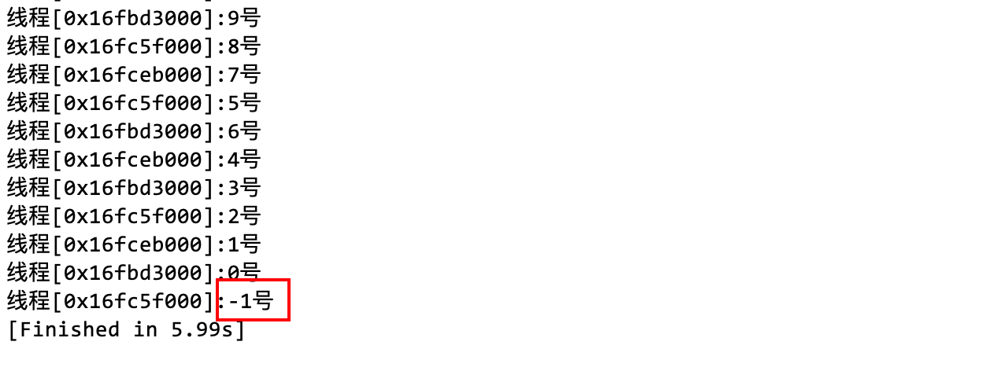
但是结果却出现了负数。这是因为代码中存在竞态条件。在多线程环境中，当多个线程同时访问共享数据（即全局的 tickets 变量）时，可能会出现竞态条件。在当一个线程检查 tickets > 0 时，另一个线程可能会修改 tickets 的值。这可能导致多个线程同时进入临界区域并执行 tickets–操作，从而导致 tickets 的值变为负数。
实际上，--操作虽然从 C/C++代码来看只有 1 行，但是它对于 CPU（及其寄存器）而言，是 3 条指令，这可以通过汇编代码验证，截图源自 https://godbolt.org/
因此，tickets–（自增和自减）操作并不是原子的，它实际上包括三个步骤：从内存中读取 tickets 的值到 CPU 的寄存器中，CPU 将其减 1，然后将结果写回内存–这些步骤通常是通过寄存器来完成的。
由于这些步骤并不是原子的，在多线程环境中可能会出现竞态条件。为什么呢？（通过下面这段话就能理解原子操作的重要性）。
首先要明确线程的调度是不确定的，线程随时有可能被切换。也就是说，线程在执行--操作的任意 3 个步骤的任意可能的时机，都可能被切换。
例如，假设线程 A 和线程 B 执行之前 tickets 的值为 1，说明它们都已经通过了tickets > 0这一分支。线程还没从内存中读取 tickets 的值就被调度器给切换了；此时，线程 B 被调度，但是它没有被打断，而是完整地执行完 3 个步骤，所以在内存中 tickets 的值已经被线程 B 更新为 0 了。然后在某个时刻线程 A 再次被调度回来继续执行，线程 A 从中断的地方继续执行（注意此时已经通过 if 判断），从内存中读取的 tickets 值就是被线程 B 更新后的 0 了，那么最后 tickets 的值就是-1。
因此，出现-1 的结果也不是一定的，如果将 tickets 的初始值设置的比较小，那么最后可能会得到 0（取决于调度器），出现这样的结果也是不对的，因为现实生活中一般不会把 0 作为票的编号。同样地，当线程 A 在从内存中读取 tickets 的值后马上就被切换为线程 B 执行--操作，即使 tickets 的值被线程 B 更新为 0，已经不满足继续取票的条件了；但是操作系统会在线程 A 被切换时保存它的上下文数据（被 load 到寄存器中的数据都叫上下文），被切换回来时，线程 A 看到的仍然是原先的 tickets 值 1，所以线程 A 仍然会将 tickets 值更新为 0。
由于多个线程同时访问共享资源，因此需要使用互斥锁或其他同步机制来确保数据的一致性。可以使用互斥锁或条件变量等同步机制来保护对共享数据的访问。本文将介绍部分同步机制。
补充：如果在 Linux 下使用 g++编译器编译含有 thread 库函数的 C++源文件，必须加上
-lthread选项，即使<thread>是 C++内置的线程库。原因：
C++内置的线程库是基于 pthread 的封装，提供了更高层次的抽象和接口，使得编写多线程程序更加方便和安全。C++内置的线程库包含了一些类和函数，如 std::thread, std::mutex, std::condition_variable 等，它们都是对 pthread 的功能的封装或扩展。
我们之前在 Linux 平台中用的 pthread 库是一种跨平台的线程标准，定义了一系列的函数和数据类型，用于创建和管理线程。pthread 是 POSIX 标准的一部分，因此在支持 POSIX 的操作系统中，都可以使用 pthread。也就是说，如果这段代码在 Windows 环境下编译运行，那么 C++的内置 thread 库会链接到 Windows 内置的线程库中。
在用 g++编译器编译含有 pthread 库函数的 C++源文件时，需要加上-lthread 选项，是因为 pthread 不是 C++标准库的一部分，而是一个独立的库。因此，在链接阶段，需要告诉编译器去寻找 pthread 库，并将其链接到可执行文件中。-lthread 选项就是用于指定链接 pthread 库的选项，它会在系统中搜索名为 libthread.so 或 libthread.a 的文件，并将其链接到可执行文件中。
2. 前导概念
在多线程编程中，一个常见的问题是如何处理多个线程同时访问和修改同一个全局变量的情况，如果不规范地编写代码，很容易出现线程安全问题。
为了解决线程安全问题，一种常用的方法是使用同步机制，例如锁、信号量、互斥量等。同步机制可以保证在任意时刻只有一个线程可以访问和修改共享数据，从而避免数据的不一致和错误。
2.1 同步与异步
在了解同步机制之前，需要明确线程间同步的概念，同步和异步是相对的，可以放在一起理解。以上课为例，假设上课时小明有事出去了：
- 同步：全班暂停，直到小明回来以后才继续上课；
- 异步：继续上课，各忙各的，互不影响。
同步和异步通常用来描述两个或多个事件之间的关系。同步是指两个或多个事件按照一定的顺序发生，一个事件的发生依赖于另一个事件的完成。异步则是指两个或多个事件之间没有固定的先后顺序，它们可以独立发生。
2.2 互斥与并发
互斥与并发相对。互斥是指同一个资源同一时间只有一个访问者可以进行访问，其他访问者需要等前一个访问者访问结束才可以开始访问该资源。并发是指在操作系统中，同个处理机上有多个程序同时运行。
举个例子，假设电影院有一部电影正在上映，这部电影的座位就是资源。
- 互斥：如果这部电影的座位全部售罄，那么就没有人能够再买到这部电影的票了。
- 并发：如果电影院同时上映多部电影，观众可以选择购买其他电影的票，这就是并发的概念。
在这里，我们先理解了互斥，通过后续的深入，便能渐渐理解并发。首先可以从集合的角度看待并发：电影院所有看电影的人是全集 C，买到这部电影票的人属于集合 A，没有买到这部电影票的人属于集合 B，集合 A+集合 B=全集 C。那么这种“非此即彼”的关系就是互斥（要么你，要么我）。
2.3 原子性操作
原子性操作是指不可中断的一个或一系列操作。这些操作只能在一个线程执行完之后，另一个线程才能开始执行该操作，也就是说这些操作是不可分割的，线程不能在这些操作上交替执行，例如例子中的--操作就不是原子的，因为它需要 3 个步骤。
因此，要在多线程编程中减少出现类似上例中的错误，就要使用原子性操作。原子性操作只有两种状态，即完成前和完成后，没有中间状态（执行中）。
汇编指令对应着 CPU 寄存器硬件的操作，因此在汇编的角度上看，某个操作只对应着一条汇编指令，那么这个操作就是原子性的。对 CPU 而言，原子性指令就是由 CPU 直接执行的操作。
2.4 临界资源和临界区
临界资源和临界区是操作系统中的两个重要概念，它们与进程的同步和互斥有密切的关系。
临界资源
- 临界资源是指在多进程环境下，不能被多个进程同时使用或访问的资源。
例如打印机、磁带机、文件等。如果多个进程同时使用或访问临界资源，可能会导致数据的不一致或错误。因此，对于临界资源，必须实现进程之间的互斥访问，即在任意时刻，只能有一个进程使用或访问该资源，其他需要使用或访问该资源的进程必须等待。
临界区
- 临界区是指在多进程环境下，访问临界资源的那段代码。
由于临界区涉及到对临界资源的操作，因此必须保证在任意时刻，只能有一个进程执行临界区的代码，其他需要执行临界区的代码的进程必须等待。如果多个进程同时执行临界区的代码，可能会导致数据的不一致或错误。
如何管理
为了保护临界资源和管理临界区，操作系统提供了一些机制，例如信号量、互斥锁、条件变量、管程等。这些机制的基本思想是：在进入临界区之前，进程必须先获取一个标志或锁，表示该进程拥有对临界资源的访问权；在退出临界区之后，进程必须释放该标志或锁，表示该进程放弃对临界资源的访问权；如果一个进程试图获取一个已经被其他进程占用的标志或锁，那么该进程将被阻塞，直到其他进程释放该标志或锁为止。
通过这些机制，可以实现对临界资源和临界区的有效保护和管理，从而保证多进程环境下的数据一致性和正确性。
3. 互斥锁
3.1 引入
承接上面的抢票程序，判断tickets > 0本质也是计算的一种方式。在 CPU 计算之前要先将内存中的数据加载（load）CPU 的寄存器中，数据从内存流到了寄存器只是体现在数据传递的层面，这是理解结果出错的难点。从执行流的角度看，当前 CPU 正在执行哪个执行流的指令，它的寄存器中存放的就是哪个执行流的数据。当多个线程访问同一个全局变量（共享资源），可能会导致上下文数据中的这个全局变量的值本来已经到极限了，却线程眼中的却是它被修改之前的值，这是由于线程在混乱的时序下切换造成的结果。
这和（不）可重入函数是类似的，C/C++中对变量进行--操作，在线程切换时时有风险的。而这只是一个独立的示例，实际情况要复杂得多，线程被调度（被切换）也是不确定的。
如何避免这样的问题？
- 对全局变量（共享资源）进行保护。
它出现负数的原因是--操作被打断了，线程 A 还没让 CPU 计算就被切换了，而线程 B 看到的还是原来的值，当线程 B 更新以后，全局变量的值就已经不合法了，但是线程 A 被切换回来，「恢复线程上下文，上下文中全局变量的值是旧的值，通过了 if 判断」，所以多减了一次。
也就是说根本原因是--操作被打断了，如果有一个机制可以让线程在执行类似--这样非原子操作时，其他线程不能执行，就能保证这个共享资源最后一定是合法的。
这种机制如何实现？
在抢票的例子中，可以用一个标记实现互斥机制，这个标记对于某个共享资源是唯一的，也就是说，当所有线程访问同一个共享资源之前，操作系统只会让那一个被标记的线程访问。
3.2 概念
互斥锁（mutex）是一种用于实现多线程之间的同步机制的工具，它可以保证在任一时刻，只有一个线程可以访问共享的资源或代码段。互斥锁可以避免多线程程序中出现数据竞争（data race）或者死锁（deadlock）等问题，提高程序的正确性和稳定性。
互斥锁的基本用法是：
- 创建一个互斥锁对象，然后在需要访问临界区域的代码前，调用互斥锁的 lock() 函数，以获取锁的所有权。
- 在访问完临界区域后，调用互斥锁的 unlock() 函数，以释放锁的所有权。
当线程执行完任务释放锁以后，锁会被传递给其他等待获取锁的线程，它们会重复以上操作以安全地完成任务。
补充：
C++标准库提供了 std::mutex 类来实现互斥锁的功能，以及 std::lock_guard 和 std::unique_lock 两种辅助类，用于简化互斥锁的管理和异常安全。–不过在本文中暂不介绍 C++中的互斥锁，而仍然以 pthread 库中的锁为例，如上所说，C++内置的线程库函数也是通过 pthread 库函数实现的。
在 pthread 库中，提供了互斥锁的相关函数，用于创建、初始化、加锁、解锁和销毁互斥锁。互斥锁可以分为全局锁和局部锁，它们的用法有所不同，但都要进行初始化、加锁和解锁操作。
-
全局锁是指在程序的全局变量区定义的互斥锁，它可以被程序中的任何线程使用。全局锁的优点是简单易用，不需要传递参数，也不需要动态分配内存。全局锁的缺点是可能造成资源浪费，因为不同的线程可能需要访问不同的共享资源，但是只能使用同一个互斥锁，这会导致不必要的等待和阻塞。另外，全局锁也不利于模块化编程，因为它破坏了数据的封装性。
-
局部锁是指在程序的局部变量区或堆区定义的互斥锁，它只能被定义它的函数或结构体中的线程使用。局部锁的优点是可以根据需要创建多个互斥锁，每个互斥锁只保护一个共享资源，这样可以提高并发性和效率。另外，局部锁也有利于模块化编程，因为它保持了数据的封装性。局部锁的缺点是需要传递参数，或者动态分配内存，这会增加编程的复杂度和开销。
什么是加锁和解锁？
加锁和解锁是一种实现临界区互斥性的方法。加锁是指在进入临界区之前，线程需要获取一个锁对象，如果锁对象已经被其他线程占用，就必须等待或者阻塞，直到锁对象被释放。解锁是指在退出临界区之后，线程需要释放锁对象，从而让其他等待的线程有机会获取锁对象并进入临界区。–最重要的一点就是没有拿到锁的线程如果被分配去执行任务，那么它会阻塞等待。
3.3 示例
pthread_mutex 函数家族
pthread_mutex 函数家族是 POSIX 线程库中用于操作互斥锁的一组函数。它们包括：
pthread_mutex_init：初始化互斥锁。它接受两个参数，第一个参数是指向pthread_mutex_t类型变量的指针，第二个参数是指向pthread_mutexattr_t类型变量的指针，用于设置互斥锁的属性。如果使用默认属性，可以将第二个参数设置为NULL。pthread_mutex_destroy：销毁互斥锁。它接受一个指向pthread_mutex_t类型变量的指针作为参数。在使用完互斥锁后，应调用该函数来释放资源。pthread_mutex_lock：加锁互斥锁。它接受一个指向pthread_mutex_t类型变量的指针作为参数。如果互斥锁已经被锁定，调用该函数的线程将阻塞，直到互斥锁被解锁。pthread_mutex_trylock：尝试加锁互斥锁。它接受一个指向pthread_mutex_t类型变量的指针作为参数。如果互斥锁已经被锁定，该函数会立即返回而不会阻塞。pthread_mutex_unlock：解锁互斥锁。它接受一个指向pthread_mutex_t类型变量的指针作为参数。在使用完共享资源后，应调用该函数来解锁互斥锁，以便其他线程可以访问共享资源。
以上是 pthread_mutex 函数家族中常用的几个函数，它们都接受一个指向 pthread_mutex_t 类型变量的指针作为参数，并在成功时返回 0，失败时返回错误码。
用法
pthread 中的互斥锁（pthread_mutex_t）是一个结构体类型，这个结构体包含了一些内部变量，用来表示互斥锁的状态和属性。我们暂时不需要关心这些变量的具体含义，只需要知道它是用来实现线程间的互斥操作的。步骤如下：
要使用 pthread_mutex_t 类型的变量，首先要对它进行初始化。初始化有两种方式：
-
静态初始化：在编译时就给互斥锁赋值为一个常量，表示它是一个默认属性的互斥锁（我们暂时不需要关心默认属性是什么），这种方式只能用于全局或静态变量。例如：
pthread_mutex_t mutex = PTHREAD_MUTEX_INITIALIZER // 它是一个宏这样就创建了一个默认属性的互斥锁变量 mutex。静态初始化的好处是简单方便，不需要调用函数，但是缺点是只能使用默认属性，不能指定其他属性，例如是否递归、是否健壮等。
-
动态初始化：在运行时调用函数来初始化变量，这种方式可以用于全局、静态和局部变量。例如：
pthread_mutex_t mutex; pthread_mutex_init(&mutex, NULL);这样也创建了一个默认属性的互斥锁变量 mutex。
注：关于属性，暂时不用关心，一般设置为 nullptr/NULL。
但是与静态初始化不同的是，动态初始化可以指定第二个参数为一个 pthread_mutexattr_t 类型的变量，该变量可以用来设置互斥锁的属性，例如：
pthread_mutex_t mutex; pthread_mutexattr_t attr; pthread_mutexattr_init(&attr); pthread_mutexattr_settype(&attr, PTHREAD_MUTEX_RECURSIVE); pthread_mutex_init(&mutex, &attr);
这样就创建了一个递归属性的互斥锁变量 mutex。递归属性意味着同一个线程可以多次锁定同一个互斥锁而不会造成死锁。动态初始化的好处是可以灵活地设置互斥锁的属性，但是缺点是需要调用多个函数，并且要注意释放互斥锁和属性变量的内存，例如：
pthread_mutex_destroy(&mutex);
pthread_mutexattr_destroy(&attr);总之，pthread_mutex_t 类型的变量是一种重要的线程同步机制，它可以用来保护共享资源不被多个线程同时修改。根据不同的需求，可以选择静态初始化或者动态初始化来创建互斥锁变量，并且要注意正确地使用和释放它们。
全局锁
- 用
pthread_mutex_t定义一个全局锁； - 在对全局变量操作之前使用
pthread_mutex_lock()加锁； - 在操作全局变量后使用
pthread_mutex_unlock()解锁。
#include <iostream>
#include <unistd.h>
#include <pthread.h>
using namespace std;
pthread_mutex_t mtx = PTHREAD_MUTEX_INITIALIZER; // 定义一个全局锁
int tickets = 10000; // 票数
// 线程函数
void* getTickets(void* args)
{
(void)args;
while(1)
{
pthread_mutex_lock(&mtx); // 加锁
if(tickets > 0)
{
usleep(1000);
printf("线程 [%p]:%d 号、n", pthread_self(), tickets--);
pthread_mutex_unlock(&mtx); // 解锁
}
else
{
pthread_mutex_unlock(&mtx); // 解锁
break;
}
}
return nullptr;
}
int main()
{
pthread_t t1, t2, t3;
// 多线程抢票
pthread_create(&t1, nullptr, getTickets, nullptr);
pthread_create(&t2, nullptr, getTickets, nullptr);
pthread_create(&t3, nullptr, getTickets, nullptr);
pthread_join(t1, nullptr);
pthread_join(t2, nullptr);
pthread_join(t3, nullptr);
return 0;
}输出
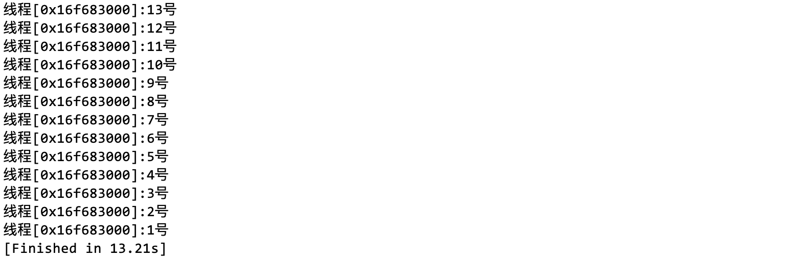可以看见，最后全局变量 tickets 的值不会是 0 或 1，而且同样是 3 个线程，10000 张票，使用互斥锁以后时间就变长了。虽然截图中都是同一个线程，在运行过程中也可以看到其他线程在运行。经常出现某个线程的可能原因是这个线程的优先级比较高，会优先被调度器调度。–这是属于调度器的行为，而不取决于用户写的代码。
在加锁之前，由于线程的调度是不确定的，各个线程对临界资源的访问是互不影响的，但是加锁之后只允许一个线程访问临界资源，保证了全局变量最终一定是合法的，与此同时会带来一定程度上的性能损耗。
局部锁
如果是局部定义的锁，必须调用对应的初始化函数对锁进行初始化，同时也要在对应的地方销毁锁。
int main()
{
pthread_mutex_t mtx; // 定义局部锁
pthread_mutex_init(&mtx, NULL); // 初始化锁
pthread_t t1, t2, t3;
// 多线程抢票
pthread_create(&t1, nullptr, getTickets, nullptr);
pthread_create(&t2, nullptr, getTickets, nullptr);
pthread_create(&t3, nullptr, getTickets, nullptr);
pthread_join(t1, nullptr);
pthread_join(t2, nullptr);
pthread_join(t3, nullptr);
pthread_mutex_destory(&mtx); // 销毁锁
return 0;
}但是这样的话线程函数getTickets()就看不到在 main 函数定义的局部锁了，但是可以通过传参实现，由于线程函数的参数是 void *类型，可以接收任何类型的实参，例如一个数组，甚至可以是一个对象，只要以 (void*) 传参，在函数内部再转回去就能得到参数中的内容了。数据类型的不同只是看待内存的视角不同，限制的是访问内存数据的权限，而数据本身是不变的。这就好像有些网盘会检测不让上传的资源，但是我们可以修改一下后缀再上传，以后要用的话再改回来就好了，里面的内容是不会被改变的。
可以将线程的信息（例如线程的别名）和锁的地址打包成一个对象传递给线程函数，这个对象的类型可以定义为ThreadData：
#include <iostream>
#include <string>
#include <unistd.h>
#include <pthread.h>
#include <ctime>
#include <chrono>
using namespace std;
#define THREAD_NUM 5
int tickets = 10000; // 票数
class ThreadData
{
public:
// 构造函数
ThreadData(const string& tname, pthread_mutex_t* pmtx)
: _tname(tname)
, _pmtx(pmtx)
{}
public:
string _tname; // 线程名
pthread_mutex_t* _pmtx; // 锁的地址
};
// 线程函数
void* getTickets(void* args)
{
ThreadData* td = (ThreadData*)args; // 获取参数传递的数据
while(1)
{
pthread_mutex_lock(td->_pmtx); // 加锁
if(tickets > 0)
{
usleep(1000);
printf("线程 [%p]:%d 号、n", pthread_self(), tickets--);
pthread_mutex_unlock(td->_pmtx); // 解锁
}
else
{
pthread_mutex_unlock(td->_pmtx); // 解锁
break;
}
usleep(rand() % 1500); // 抢完票的后续操作，用 sleep 代替
}
delete td; // 销毁数据
return nullptr;
}
int main()
{
auto start = std::chrono::high_resolution_clock::now(); // 计时开始
pthread_mutex_t mtx; // 定义局部锁
pthread_mutex_init(&mtx, NULL); // 初始化锁
srand((unsigned long)time(nullptr) ^ 0x3f3f3f3f ^ getpid());
pthread_t t[THREAD_NUM];
for(int i = 0; i < THREAD_NUM; i++) // 多线程抢票
{
string tname = "thread["; // 线程名
tname += to_string(i + 1); tname += "]";
ThreadData* td = new ThreadData(tname, &mtx); // 创建保存数据的对象
pthread_create(t + i, nullptr, getTickets, (void*)td); // 创建线程的同时将名字和数据对象传递
}
for(int i = 0; i < THREAD_NUM; i++) // 等待线程
{
pthread_join(t[i], nullptr);
}
pthread_mutex_destroy(&mtx); // 销毁锁
auto end = std::chrono::high_resolution_clock::now(); // 计时结束
cout << "THREAD_NUM = " << THREAD_NUM << endl;
cout << "共花费：" << chrono::duration_cast<std::chrono::milliseconds>(end - start).count() << "ms" << endl;
return 0;
}增加的逻辑：
- ThreadData 类的成员包含线程的信息（为了方便只用了线程名字，实际上线程还有其他信息），还有线程函数 getTickets() 要用到的在 main 函数中定义的局部锁的地址；
- 在线程函数 getTickets() 函数中，加锁、访问临界资源、解锁后线程还需要做其他工作，例如处理数据等，这里用 usleep 一个随机数代替。在 main 中的随机数种子异或上了几个数字（是任意取的），意在让随机数更随机；
- 在循环中创建线程，并将线程的名字和编号绑定，和锁的地址打包进 ThreadData 对象中。注意这个对象是
new出来的，因此在线程函数 getTickets() 的最后要delete它；在函数内部，需要用对象提取它的成员变量，以使用线程信息和锁； - 为了稍后用时间代替性能上的分析，所以在 main 函数的始末增加了计时逻辑，使用了
<chrono>头文件中的high_resolution_clock类（属于 std) 来实现高精度计时（毫秒），在此不需要关心它的使用。
输出：
3.4 性能损耗
在上面的例子中，如果将 THREAD_NUM 改成 100，运行时间会不会缩短呢（注释了线程函数中的 usleep，增加了打印语句）？
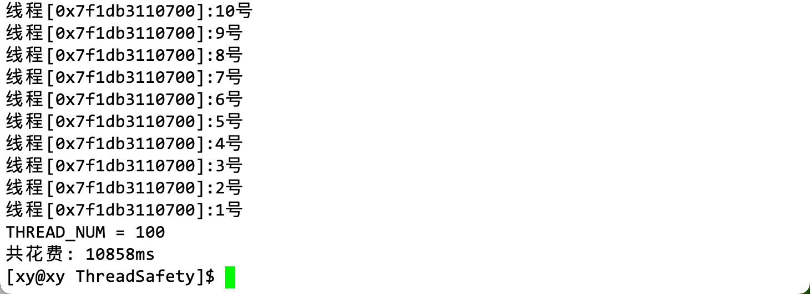从结果上看，即使没有让线程休眠，也快不了多少，是毫秒级的。
增加线程数量可能会缩短程序的执行时间，但这并不是绝对的。程序的执行时间取决于许多因素，包括硬件性能、操作系统调度策略、程序结构和算法复杂度等。在多核处理器系统中，增加线程数量可以充分利用多核处理器的并行计算能力，从而缩短程序的执行时间。但是，如果线程数量过多，线程之间的调度和同步开销也会增加，从而影响程序的执行效率（也就是说线程调度也是需要耗费时间的）。
此外，如果程序中存在大量的串行计算或 I/O 操作，增加线程数量可能并不能显著缩短程序的执行时间。
互斥锁虽然能保护共享资源的安全，但同时也会带来一些性能上的开销，主要有以下几个方面：
- 互斥锁的创建和销毁需要调用操作系统的 API，这会消耗一定的时间和内存资源。
- 互斥锁的加锁和解锁需要进行原子操作（atomic operation），这会增加 CPU 的指令数和内存访问次数。
- 互斥锁的等待和唤醒需要进行上下文切换（context switch），这会导致 CPU 缓存（cache）的失效和线程调度（scheduling）的延迟。
- 互斥锁的竞争会造成线程的阻塞（blocking）或者忙等待（busy waiting），这会降低线程的利用率和并发度。
因此，互斥锁在一定程度上会降低多线程程序的效率，尤其是在互斥锁保护的代码段或资源：
- 非常频繁地被访问，导致锁的竞争很激烈。
- 非常耗时地被执行，导致锁的持有时间很长。
- 非常简单地被处理，导致锁的开销占比很高。
那么，如何减少互斥锁对多线程程序效率的影响呢？一般来说，有以下几个建议：
- 尽量减少互斥锁的数量和范围，只保护必要的共享数据或临界区（critical section），避免过度同步（oversynchronization）。
- 尽量缩短互斥锁的持有时间，尽快释放锁，避免在持有锁的情况下进行 I/O 操作或其他耗时操作。
- 尽量使用更高效的同步机制，如读写锁（read-write lock）、自旋锁（spin lock）、条件变量（condition variable）等，根据不同场景选择合适的工具。
总之，互斥锁是一种有利有弊的同步机制，它可以保证多线程程序的正确性和稳定性，但也会降低程序的效率。因此，在使用互斥锁时，需要权衡利弊，合理设计和优化代码，以达到最佳的性能表现。
3.5 串行执行
在多线程程序中，如果多个线程需要访问共享资源，通常需要使用同步机制（例如互斥锁）来保护共享资源。当一个线程获得锁并进入临界区时，其他试图进入临界区的线程将被阻塞，直到锁被释放。这样，多个线程在临界区内就会串行（xin，2）执行。
串行执行可以用来描述单个线程中语句的执行顺序，也可以用来描述多个线程之间的执行顺序。在程序中，指的是指令按顺序依次执行，每条指令的执行必须在前一条指令执行完成后才能开始。下面是一个简单的 C++ 程序，它演示了串行执行的过程：
#include <iostream>
int main()
{
std::cout << "Step 1" << std::endl;
std::cout << "Step 2" << std::endl;
std::cout << "Step 3" << std::endl;
return 0;
}在这个程序中，三条 std::cout 语句按顺序依次执行。程序的输出结果如下：
Step 1
Step 2
Step 3可以看到，程序中的指令按顺序依次执行，这就是串行执行。这段代码的对象是每条语句，串行执行的对象也可以是线程。
串行执行是一种实现多线程安全的方法，它指的是让多个线程按照一定的顺序依次执行，而不是同时执行。串行执行可以避免多个线程对同一个资源的竞争，从而保证资源的完整性和正确性。–说白了就是让线程一个一个排队执行任务，效率自然比不过多个线程同时执行。
串行执行的优点是简单易理解，不需要额外的同步机制，也不会产生死锁等问题。串行执行的缺点是效率低下，不能充分利用多核处理器的性能，也不能实现真正的并行。死锁有关的内容在本文第六节。
串行执行可以通过以下几种方式实现：
- 使用单线程：如果只有一个线程执行所有的任务，那么就不存在多线程安全的问题，也就是串行执行。这种方式最简单，但也最低效。
- 使用互斥锁：互斥锁是一种同步机制，它可以保证在任意时刻只有一个线程可以访问共享资源。其他想要访问资源的线程必须等待锁被释放后才能继续执行。这种方式可以实现部分并行，但也会增加开销和复杂度。
- 使用队列：队列是一种数据结构，它可以按照先进先出（FIFO）的原则存储和处理数据。如果将所有需要访问共享资源的任务放入一个队列中，然后由一个专门的线程按照队列中的顺序依次执行这些任务，那么就可以实现串行执行。这种方式可以减少锁的使用，但也会增加延迟和内存消耗。
总之，在多线程安全中，串行执行是一种简单但低效的方法，它适合用于对性能要求不高、对正确性要求高的场景。
加锁就是串行执行了吗？
加锁会使多个线程在临界区内串行执行。但这并不意味着整个程序都是串行执行的。在临界区外，多个线程仍然可以并行执行。加锁只是一种同步机制，它并不改变程序的并行性质。它只是确保多个线程在访问共享资源时不会发生冲突。
3.6 补充
加锁之后线程在执行临界区的代码时会被切换吗？
答案是肯定的。加锁之后线程在临界区中可能会被切换，这是操作系统调度机制决定的。加锁只能保证线程在进入临界区之前不会被切换，但是在临界区中执行的过程中，线程仍然可能因为各种原因而被切换，例如时间片用完、发生中断、主动让出 CPU 等。当线程被切换时，它仍然持有锁对象，直到它再次被调度并执行完临界区代码后才会释放锁对象。
重新审视上面的代码，当某个拿到锁的线程被切换后，其他线程无法申请到锁，其他所有线程不能执行临界区的代码，也就保证了临界资源的数据一致性。（哥不在江湖，但江湖依旧有我的传说~）其实没啥安全影响，就是让其他线程等了一会，降低了效率 [也蛮恶劣，有办法缓解]。
那么，线程在临界区中被切换会有什么影响吗？（注意「线程在临界区中」等价于「线程在执行临界区的代码」）
影响主要有两方面：
一方面，线程在临界区中被切换会导致其他等待的线程无法及时进入临界区，也就是说，线程被切换时拿着锁跑了，但是对于某个临界资源只有一个锁。从而降低了程序的并发性能和响应速度。因此，在设计临界区时，应该尽量减少临界区的长度和复杂度，避免在临界区中进行耗时的操作或者调用可能阻塞的函数。
另一方面，线程在临界区中被切换也可能导致一些逻辑错误或者死锁的情况。例如，如果一个线程在获取了一个锁对象后，在临界区中又试图获取另一个锁对象，而这个锁对象恰好被另一个线程占用，并且这个线程又在等待第一个线程释放的锁对象，那么就会形成一个循环等待的死锁。因此，在设计临界区时，应该遵循一些规范和原则，例如避免嵌套使用多个锁对象、按照固定的顺序获取和释放锁对象、使用超时机制或者死锁检测机制等。实际上，有个重要的规则就是能不用锁就不用锁，因为查错非常麻烦。
如果临界区有很多个语句，会出现问题吗？
虽然临界区的代码有很多，但是互斥锁保证了临界区的代码在同一时间只有一个线程能访问，在代码本身满足要求的情况下，不会有问题。
这取决于临界区的代码是否满足以下几个原则：
- 原子性：临界区的代码应该是不可分割的，即要么全部执行，要么全部不执行。如果临界区的代码中有可能抛出异常或者被中断，那么就需要使用异常处理或者信号处理机制，确保临界区的代码在任何情况下都能正确地退出，并释放锁。
- 互斥性：临界区的代码应该只能由一个线程执行，即不能有其他线程同时进入临界区。这需要使用同步机制，如互斥锁、信号量、条件变量等，来保证只有一个线程能够获得对共享资源的访问权。
- 有序性：临界区的代码应该按照预期的顺序执行，即不能有指令重排或者内存可见性问题。这需要使用内存屏障或者原子操作，来保证临界区的代码在不同的处理器或者内存模型下都能正确地执行。
什么是正确的多线程编码方式？
我们无法控制调度器调度线程的策略，只能人为地通过加锁和解锁限制在同一时间段对共享资源的访问权限，这个操作一定需要程序员手动实现。而共享资源对于在同一个进程地址空间的所有线程而言是裸露的，它们可以直接访问共享资源。加锁只是利用了语句执行的顺序是从上到下的特点，如果在临界区中或后申请锁，那锁也没啥用了。
但是一个线程在不申请锁的情况下访问临界资源，是一种错误的多线程编程方式。具体原因已经在上面解释过不止一次了。为了防止这种情况发生，应使用同步机制（例如互斥锁）来保护共享资源。当一个线程需要访问共享资源时，应先申请锁，然后再进入临界区。在使用完共享资源后，应释放锁，以便其他线程可以访问共享资源。
要访问临界资源，每一个线程都要申请锁，也就是说这个锁必须被所有线程共享，因此锁本身也是一种共享资源。锁保证了临界资源的安全，那么谁来保证锁本身的安全？
锁本身的安全是由操作系统的原子操作保证的。原子操作可以保证在多线程环境下在任何时刻只有一个线程能够访问锁，而且申请锁和释放锁的操作也是原子的，这样就保证了锁本身的安全。
4. 互斥锁的实现原理
互斥锁的实现原理可以分为两个方面：硬件层面和软件层面，在这里只讨论 CPU 及寄存器的部分操作，以软件层面为例。
互斥锁的本质就是一个标记作用，它在内存中是一个数字。
4.1 线程的执行和阻塞
无锁的线程被分配任务后会挂起等待锁的分配。
软件层面的实现原理主要依赖于操作系统提供的调度机制，即操作系统可以控制线程或进程的执行和阻塞。操作系统可以维护一个互斥锁的状态和等待队列，当一个线程或进程想要访问共享资源时，先检查互斥锁的状态，如果互斥锁未被占用，可以继续访问，并将互斥锁的状态设为占用；如果互斥锁已被占用，需要将自己加入到等待队列中，并阻塞自己；当访问完共享资源后，再将互斥锁的状态设为未占用，并唤醒等待队列中的一个线程或进程。这种互斥锁也称为睡眠锁（sleeplock），因为等待的线程或进程需要睡眠等待被唤醒。
4.2 自旋锁与互斥锁
概念
在 Linux 内核中，加锁和解锁是通过使用原子指令来实现的。原子指令是由 CPU 直接执行的操作，它们可以保证原子性。
互斥锁（mutex）和自旋锁（spinlock）是两种常见的同步机制，用于保护临界区的访问。它们的区别在于，当一个线程试图获取一个已经被占用的锁时，互斥锁会让该线程进入睡眠状态，等待锁的释放；而自旋锁则会让该线程不断地循环检查锁的状态，直到获取到锁为止。因此，互斥锁可以避免浪费 CPU 资源，但是会增加上下文切换的开销；而自旋锁可以减少上下文切换的开销，但是会占用 CPU 资源。
在 Linux 中，我们可以用自旋锁的实现原理从汇编角度理解互斥锁，事实上，Linux 内核中的互斥锁就是基于自旋锁实现的。
具体来说，Linux 内核中定义了一个结构体mutex，其中包含了一个自旋锁和一个等待队列。自旋锁通过不断检查锁的状态来防止多个线程同时访问共享资源。如果锁被占用，线程会一直等待，直到锁被释放。当一个线程试图获取一个互斥锁时，它首先会尝试获取该互斥锁内部的自旋锁。如果成功，说明该互斥锁没有被占用，那么该线程就可以进入临界区；如果失败，说明该互斥锁已经被占用，那么该线程就会将自己加入到等待队列中，并释放自旋锁，然后进入睡眠状态。当一个线程释放一个互斥锁时，它首先会检查等待队列是否为空。如果为空，说明没有其他线程在等待该互斥锁，那么该线程就可以直接释放自旋锁；如果不为空，说明有其他线程在等待该互斥锁，那么该线程就会从等待队列中取出一个线程，并唤醒它，并将自旋锁转移给它。
从汇编角度来看，Linux 内核中使用了一些特殊的指令来实现自旋锁和互斥锁。例如，在 x86 架构下，Linux 内核使用了 lock 前缀来保证指令的原子性；使用了 xchg 指令来交换两个操作数的值（本节最重要的指令）；使用了 cmpxchg 指令来比较并交换两个操作数的值；使用了 test_and_set_bit 指令来测试并设置一个位；使用了 test_and_clear_bit 指令来测试并清除一个位；使用了 pause 指令来优化自旋循环等。这些指令都是利用了 CPU 的硬件支持来实现原子操作和内存屏障。
lock 是一种常用的同步机制，用于保证多个线程对共享资源的互斥访问。但是，lock 的实现并不简单，需要借助一些底层的原子操作，比如 xchgb/xchg 指令。xchgb/xchg 指令是一种交换两个操作数的值的指令，它具有原子性，即在执行过程中不会被其他线程或中断打断。xchgb 指令可以用来实现一种简单的 lock，称为自旋锁 (spinlock)。
xchg 指令
在 x86 架构的处理器中，有一条指令叫做 xchgb（exchange byte），它可以原子地交换两个字节大小的内存地址的值，其中一个操作数必须是寄存器，另一个操作数可以是寄存器或内存地址。xchgb 指令的执行过程是不可被中断的，也就是说，在它执行期间，其他线程或进程无法访问它所涉及的内存地址。这样就可以保证对互斥锁的操作是原子的，即不会出现竞态条件。原子性意味着这条指令在执行过程中不会被其他指令打断，也不会受到其他处理器或总线的干扰，这是硬件支持的。xchgb 指令的格式如下：
xchgb %al, (%ebx)这条指令的含义是，将寄存器 al 中的值和内存地址 ebx 中的值交换，并将交换后的值分别存回寄存器 al 和内存地址 ebx。例如，如果寄存器 al 中的值为 0x01，内存地址 ebx 中的值为 0x00，那么执行这条指令后，寄存器 al 中的值变为 0x00，内存地址 ebx 中的值变为 0x01。
xchgb 和 xchg 指令都用于交换两个操作数的值。它们的主要区别在于操作数的大小。
xchgb 指令可以用来实现互斥锁的加锁和解锁操作。对于互斥锁变量 mutex，它是一个字节大小的内存地址，初始值为 0。当 mutex 为 0 时，表示互斥锁是空闲的，当 mutex 为 1 时，表示互斥锁是占用的。
自旋锁的加解锁
下面是一个简单的 x86 汇编版本的自旋锁示例。这个示例使用xchgb指令来实现自旋锁：
spin_lock:
movb $1, %al # 将 1 放入寄存器 al
xchgb %al, (lock) # 交换 al 和内存中 lock 变量的值，并将原来的值放入 al
testb %al, %al # 测试 al 是否为 0
jnz spin_lock # 如果不为 0，说明锁已经被占用，跳回 spin_lock 继续等待
ret # 如果为 0，说明锁已经获得，返回
spin_unlock:
movb $0, (lock) # 将 0 放入内存中 lock 变量，释放锁
ret # 返回这样，我们就可以用 spin_lock 和 spin_unlock 来保护临界区（critical section），即需要互斥访问的共享资源。例如：
spin_lock # 调用 spin_lock 获取锁
# ... 临界区代码。..
spin_unlock # 调用 spin_unlock 释放锁下面是上面示例中每条指令的解释：
-
spin_lock函数会尝试获取锁。它使用xchgb指令将锁的值与 1 交换，并检查交换后的值。如果值为 0，则表示该线程成功获取了锁；否则会继续等待并重试。mov al, 1：将 1 移动到al寄存器中。xchgb al, [lock]：将al寄存器中的值与内存中的锁值交换。test al, al：测试al寄存器中的值是否为 0。jnz spin_lock：如果al寄存器中的值不为 0，则跳转到spin_lock标签处，即第一条mov al, 1指令之前 [重试]。ret：从函数返回。
-
spin_unlock函数用于释放锁。它将锁的值设置为 0，以便其他线程可以获取锁。-
mov byte [lock], 0：将内存中的锁值设置为 0。 -
ret：从函数返回。
-
在其他版本中寄存器的名字可能是 eax，这不重要。
互斥锁的加解锁
下面是一个使用 xchgb 指令实现互斥锁加锁和解锁操作的代码片段，它描述了xchgb指令如何在 CPU 和内存之间操作，以实现互斥锁。假设我们有一个字节变量lock，它用作互斥锁。初始值为 0，表示锁未被占用。当一个线程尝试获取锁时，它会执行以下操作：
; 加锁操作
mov al, 1
lock xchgb [mutex], al
test al, al
jnz try_again
; 解锁操作
mov [mutex], 0这段汇编代码片段的意思是：
-
将 1 移动到
al寄存器中。 -
使用
xchgb指令将al寄存器中的值与内存中的锁值交换。a. 将内存中的锁值读取到 CPU 中。
b. 将
al寄存器中的值写入内存中的锁位置。c. 将读取到的锁值写入
al寄存器中。 -
如果交换后
al寄存器中的值为 0，则表示加锁成功；否则，表示加锁失败，需要再次尝试加锁。解锁操作很简单，只需将内存中的锁值设为 0 即可。
注意：try_again不是汇编代码的关键字。它是一个标签，用来标记代码中的一个位置。在上面的示例代码中，jnz try_again指令表示如果前面的test al, al指令的结果为非零，则跳转到try_again标签所在的位置继续执行。这样就可以实现循环尝试加锁的操作。
这些操作是原子的，也就是说，在整个过程中，其他线程无法访问或修改内存中的锁值。因此，当线程检查交换后的锁值时，它可以确定自己是否成功获取了锁。
互斥锁的申请
假设有一个互斥锁变量 lock，它的初始值为 0，表示锁是空闲的。当一个线程想要申请这个锁时，它可以执行以下汇编代码：
movl $1, %eax # 将 1 放入寄存器 eax
xchgb %al, lock # 交换 eax 的低字节和 lock 的值，并将结果存入 lock
testb %al, %al # 测试 eax 的低字节是否为 0
jnz busy # 如果不为 0，说明锁已经被占用，跳转到 busy 标签，线程挂起阻塞
# 如果为 0，说明锁已经成功申请，继续执行临界区代码 这段代码的作用是，如果 lock 的值为 0，那么将它和 1 交换，并将 1 存入 lock，表示锁已经被申请；如果 lock 的值为 1，那么将它和 1 交换，并将 1 存入 eax 的低字节，表示锁已经被占用。然后通过测试 eax 的低字节是否为 0 来判断是否成功申请了锁。如果成功，就可以进入临界区；如果失败，就需要等待或重试，一般情况下线程申请锁失败后会挂起阻塞（即睡眠）。
补充：
-
$1表示立即数（常量或操作数）1，而%eax表示寄存器 eax。这条指令的作用是将立即数 1 移动到寄存器 eax 中。不同的汇编语法可能会使用不同的符号来表示立即数和寄存器。例如，在 Intel 语法的汇编代码中，通常不使用特殊符号来表示立即数和寄存器。 -
在 x86 架构中，
eax寄存器是一个 32 位寄存器，它的低 8 位可以通过al寄存器来访问。在这种情况下，我们只关心锁值是否为 0，而不关心锁值的其他位。
线程切换
当一个线程在申请互斥锁的同时被切换后，它的上下文（包括寄存器的值和程序计数器的值）会被保存到内存中。当线程被切换回来继续执行时，它的上下文会被恢复，使得线程能够从之前被切换出去的位置继续执行。
如果一个线程在执行完xchg指令后被切换出去，那么它的上下文（包括al寄存器的值）会被保存到内存中。当线程被切换回来继续执行时，它的上下文会被恢复，al寄存器中的值也会被恢复。这样，线程就能够继续执行test al, al指令，检查锁值是否为 0 等操作。
每个线程都有自己的一组寄存器值，但这些值并不是独立存在于 CPU 内的，而是通过上下文切换来实现的。
在执行流的眼中，CPU 的寄存器就是保存和切换不同线程上下文的“工具人”，有限的寄存器被所有执行流共享，但是它指向的每个线程的上下文是属于线程私有的，那么在线程看来，寄存器就是当前执行流的上下文（因为寄存器保存了上下文的地址）。
4.3 互斥锁的本质
互斥锁的本质就是一个数字，它对于共享资源是唯一的，是线程能否访问共享资源的一种标志。只有具有这个标志的线程才能对共享资源操作。而原子命令使得互斥锁的传递也是安全的，因此互斥锁也就能够保证共享资源数据唯一。
原子性操作是从硬件层面支持的，对于线程而言，原子性操作的两种状态对应着对它们而言最有意义的两种情况（假设有线程 A 和线程 B）：
- 什么都没做：线程 A 无锁，说明对方线程申请锁失败，那么线程 A 就能自己申请锁；
- 要做就做完：线程 A 释放锁，线程 B 就能申请锁。
对持有锁的线程而言，别的线程无法与它竞争锁，这取决于调度器；对于申请锁的线程而言，如果申请失败了，那么说明它现在正在跟别的线程竞争锁，调度器还未决定让它拿锁；对于其他线程而言，这两种情况就是原子的。
5. 可重入和线程安全
在多线程环境下，可重入和线程安全的区别是一个常见的编程问题。简单地说，可重入函数是指一个函数可以在执行过程中被中断，并且在中断后可以再次被调用而不影响原来的执行状态。线程安全函数是指一个函数可以在多个线程同时调用时，不会引起数据竞争或者逻辑错误。
5.1 可重入函数
关于可重入函数的例子，可以戳 这里。
可重入是指一个函数可以被多个任务或线程安全地调用，即使在函数执行的过程中被中断或切换，也不会影响函数的正确性和一致性。可重入函数通常遵循以下原则：
- 不使用全局变量或静态变量，只使用局部变量或传入的参数；
- 不调用 malloc()、free() 等可能修改堆的函数；
- 不调用 printf()、scanf() 等可能修改标准输入输出的函数；
- 不调用其他不可重入的函数，如 rand()、time() 等；
- 如果必须访问共享资源，如硬件设备或文件，要使用互斥锁或关闭中断来保护。
可重入函数在多任务或多线程的环境中非常重要，特别是在中断处理函数中，因为中断可能随时发生，如果中断处理函数不可重入，就可能导致数据错误或系统崩溃。可重入函数也有利于提高程序的模块化和复用性。
可重入是针对函数而言的，如果一个函数被多个线程执行，那么它就是可重入的。例如抢票的例子中，线程函数 getTickets() 函数就是不可重入函数，因为它操作了全局变量。
这也是我们在测试多线程代码时，如果不加以控制，在线程函数中打印出来的符号有时会跑到上一行，很混乱，原因不仅在于调度器调度的策略是不确定的，而且还在于 cout、prinntf 不是可重入的，即它们不是线程安全的。显示器对于线程而言，是一个共享资源，我们当然可以对输出操作加锁，但一般我们不这么做，因为我们使用打印语句只是为了显示内容，而不是操作数据。安全问题主要是要保证数据不能被修改。
5.2 线程安全
在 Linux 中，如果多个线程并发访问同一段代码，并且这段代码对全局变量或静态变量进行了操作，那么在没有锁保护的情况下，可能会出现线程安全问题。
线程安全问题通常是由于多个线程并发访问同一块数据而导致的。如果这些线程对数据进行了修改操作，那么它们之间可能会相互干扰，导致数据不一致或其他错误。
为了避免这种情况，可以使用锁来保护临界区。锁可以确保同一时间只有一个线程能够访问临界区中的数据，从而避免了线程安全问题。
5.3 常见线程不安全的情况
- 对全局变量或静态变量进行操作：如果多个线程并发访问同一个全局变量或静态变量，并且对它进行了修改操作，那么可能会出现线程安全问题。
- 使用非线程安全的函数：一些函数（如
strtok和gmtime）在多线程环境中使用时可能会出现线程安全问题。这些函数通常都有线程安全的替代版本（如strtok_r和gmtime_r），应该尽量使用这些替代版本。 - 没有正确使用锁：如果多个线程需要并发访问同一块数据，那么应该使用锁来保护这块数据。如果没有正确使用锁，或者锁的粒度不够细，那么可能会出现线程安全问题。
- 没有正确处理信号：在多线程程序中，信号处理函数应该尽量简单，并且避免对全局变量或静态变量进行操作。如果信号处理函数没有正确处理这些问题，那么可能会出现线程安全问题。
5.4 常见线程安全的情况
其实就是避免线程不安全的情况。
- 对局部变量进行操作：局部变量是每个线程独有的，因此多个线程并发访问同一个函数中的局部变量时不会出现线程安全问题。
- 使用线程安全的函数：一些函数（如
strtok_r和gmtime_r）是线程安全的，可以在多线程环境中安全地使用。 - 正确使用锁：如果多个线程需要并发访问同一块数据，那么应该使用锁来保护这块数据。如果正确使用了锁，并且锁的粒度足够细，那么程序就是线程安全的。
- 正确处理信号：在多线程程序中，如果信号处理函数能够正确处理信号，并且避免对全局变量或静态变量进行操作，那么程序就是线程安全的。
总之，线程安全通常是通过避免共享数据、使用线程安全的函数、正确使用锁和正确处理信号等方式来实现的。
5.5 常见的不可重入的情况
- 使用全局变量或静态变量：如果一个函数使用全局变量或静态变量来保存状态，那么它通常不是可重入的。这是因为全局变量和静态变量会在多次调用之间保持状态，可能会影响函数的结果。
- 调用非可重入函数：如果一个函数调用了非可重入的函数，那么它通常也不是可重入的。这是因为非可重入的函数可能会影响全局状态，从而影响其他函数的结果。
5.6 常见的可重入的情况
- 使用局部变量：如果一个函数只使用局部变量来保存状态，那么它通常是可重入的。这是因为局部变量不会在多次调用之间保持状态，每次调用都会创建一个新的局部变量。
- 不调用非可重入函数：如果一个函数只调用可重入的函数，那么它通常也是可重入的。这是因为可重入的函数不会影响全局状态，因此不会影响其他函数的结果。
总之，可重入性通常是通过避免使用全局变量或静态变量、只调用可重入的函数等方式来实现的。
5.7 可重入和线程安全的关系
可重入性和线程安全性之间的区别在于，可重入性只关注单个线程内部的行为，而线程安全性则关注多个线程之间的交互。可重入函数是线程安全函数的一种。
可重入函数一定是线程安全的，反之不一定；被正确加解锁的函数是线程安全的，但不一定能保证函数可重入。这是因为可重入函数不会使用任何共享数据或者全局变量，因此不会受到其他线程的干扰。而线程安全函数可能会使用共享数据或者全局变量，但是会通过同步机制（如锁、信号量等）来保证数据的一致性和正确性。
举例来说，malloc 函数就是一个线程安全但不可重入的函数。它会使用一个全局变量来管理内存分配，因此在多个线程同时调用时，需要加锁来避免数据竞争。但是如果一个线程在调用 malloc 时被中断，并且中断处理程序也调用了 malloc，那么就会造成死锁，因为同一个线程试图获取已经持有的锁。所以 malloc 函数不是可重入的。
另一个例子是 printf 函数，它既不是线程安全也不是可重入的函数。它会使用一个共享的缓冲区来输出字符串，因此在多个线程同时调用时，可能会导致输出混乱或者丢失。而且如果一个线程在调用 printf 时被中断，并且中断处理程序也调用了 printf，那么就会造成缓冲区溢出或者其他错误。所以 printf 函数既不是线程安全也不是可重入的。
再例如，一个使用静态变量来保存状态的函数可能是线程安全的（如果它使用了锁来保护静态变量），但它并不是可重入的（因为静态变量会在多次调用之间保持状态）。相反，一个使用局部变量来保存状态的函数可能是可重入的（因为局部变量不会在多次调用之间保持状态），但它并不一定是线程安全的（如果它没有正确处理多线程并发访问的情况）。
编写可重入和线程安全的函数是一种良好的编程习惯，它可以提高程序的稳定性和效率。为了实现可重入和线程安全的函数，我们需要遵循以下原则：
- 尽量避免使用共享数据或者全局变量，而使用局部变量或者参数传递。
- 如果必须使用共享数据或者全局变量，那么需要使用同步机制来保护它们，并且尽量缩短锁的持有时间。
- 如果必须在中断处理程序中调用其他函数，那么需要确保这些函数是可重入的，并且不会与主程序发生死锁或者递归。
- 如果必须输出信息到屏幕或者文件，那么需要使用原子操作或者缓冲机制来避免输出混乱或者丢失。
6. 死锁
6.1 概念
死锁是指两个或多个线程在执行过程中，由于竞争资源而造成的一种互相等待的现象，若无外力作用，它们都将无法继续执行。死锁通常发生在多个线程同时请求多个资源时，由于资源分配的不当，导致线程之间相互等待，无法继续执行。
例如线程 A 和线程 B 各自拥有锁 a 和锁 b，但是它们有了锁还要申请对方的锁，因为它们申请的锁已经被占用，最后会导致代码无法推进。
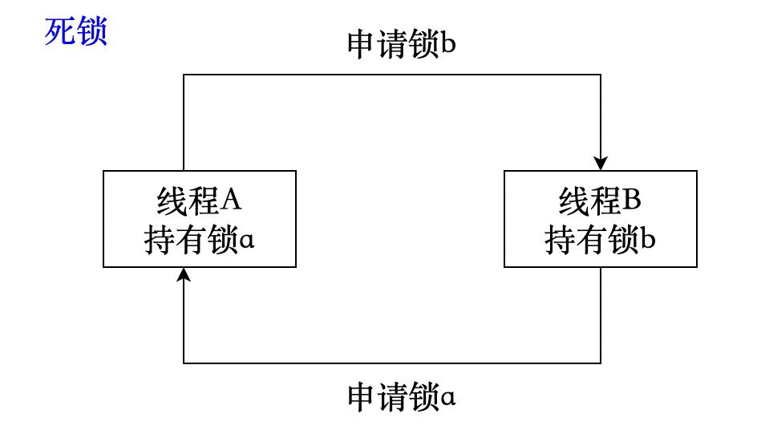注意：线程个数包括但不仅限于 2 个，实际情况可能会有很多个锁，最后构成环路。在计算机中，可能会因为 1 个锁产生死锁，即自己申请自己的锁，这种情况很少见，一般是代码写错了，了解即可。
[自信] 这可是我写的代码，这种情况可能出现吗？
- 代码中可能不止一个锁；
- 锁 a 和锁 b 的代码可能离得特别远，写代码的时候可能会忘记某个地方已经加过锁。
6.3 例子
例如在之前抢票的线程函数中，如果把释放锁的操作不小心写成了申请锁，这就是一个锁造成死锁的情况，一个线程自己申请自己持有的锁，这个线程就会一直无法释放锁，而且会导致正在等待队列中的线程一直挂起。从终端看，就是光标一直在闪烁。
// 线程函数
void* getTickets(void* args)
{
ThreadData* td = (ThreadData*)args; // 获取参数传递的数据
// ...
pthread_mutex_lock(td->_pmtx); // 加锁
// ...
// pthread_mutex_unlock(td->_pmtx); // 解锁
pthread_mutex_lock(td->_pmtx); // 本来是解锁，写成申请锁
// ...
}通过 ps 命令查看进程的状态：
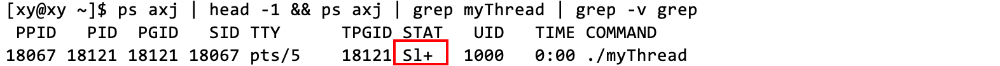Sl+中的l是 lock，表示这个进程处于死锁状态。
6.4 阻塞、挂起和等待
在多线程编程中，阻塞、挂起和等待都是指线程暂时停止执行。它们的区别在于：
- 阻塞：线程在等待某个条件满足时被阻塞，比如等待 I/O 操作完成或等待获取锁。当条件满足时，线程会自动恢复执行。
- 挂起：线程被挂起时，它不会自动恢复执行，而是需要其他线程显式地唤醒它。
- 等待：线程在等待某个条件满足时进入等待状态，比如调用 wait() 方法等待某个条件变量。当条件满足时，线程会被唤醒并继续执行。
在锁的实现中，如果一个线程试图获取一个已经被占用的锁，那么这个线程会被阻塞，并加入到锁的等待队列中。当锁被释放时，操作系统会从等待队列中取出一个或多个线程，唤醒它们，让它们继续执行。
在 Linux 操作系统中，线程被称之为轻量级进程。线程和进程都是通过 task_struct 结构来表示的，它们都可以使用相同的等待队列机制，它们的实现方式和使用方法基本相同。不过，由于线程和进程在操作系统中的管理方式不同，它们使用的等待队列也可能有所不同。
CPU 是执行任务的根本，所以对于所有要执行任务的线程和进程，它们需要的资源都是 CPU 的算力。系统中有许多不同的等待队列，它们等待的是其他资源，例如锁、磁盘、网卡等资源。
例如，当某一个进程在被 CPU 调度时，该进程需要用到锁的资源，但是此时锁的资源正在被其他进程使用，那么此时该进程的状态就会由 R 状态变为某种阻塞状态，比如 S 状态，那么该进程会被移出运行等待队列，被链接到等待锁的资源的资源对应等待队列，而 CPU 则继续调度运行等待队列中的下一个进程。此后若还有进程需要用到这一个锁的资源，那么这些进程也都会被移出运行等待队列，依次链接到这个锁的资源等待队列当中。
直到使用锁的进程已经使用完毕，也就是锁的资源已经就绪，此时就会从锁的资源等待队列中唤醒一个进程，将该进程的状态由 S 状态改为 R 状态，并将其重新链接到运行等待队列，等到 CPU 再次 调度该进程时，该进程就可以使用到锁的资源了。
小结
-
从操作系统的角度来看，阻塞、挂起和等待都是指线程暂时停止执行。操作系统会将这些线程从 CPU 调度队列中移除，以便为其他就绪线程腾出 CPU 时间。
-
从用户的角度来看，阻塞、挂起和等待都会导致线程暂时停止响应。用户可能会感觉到程序运行变慢或卡顿。不过，这些状态通常都是暂时的，当条件满足时，线程会自动恢复执行。
「资源」不限于硬件资源和软件资源。锁的本质是一种软件资源，当我们申请锁时，锁可能正在被其他线程所占用，此时当其他线程再来申请锁就会失败，那么它会被放到这个锁的资源等待队列中。
既然加锁解锁的过程中可能会出现问题，何不在线程执行线程函数之前和之后加锁和解锁，而不在线程函数中加解锁，这样就会减少问题出现的概率了。
在整个线程函数执行期间保持锁定状态可能会导致性能问题。锁定的目的是保护共享资源，防止多个线程同时访问和修改它们。如果一个线程在整个执行期间都保持锁定状态，那么其他线程将无法访问这些共享资源，即使当前线程并没有实际使用它们。
如果临界区的长度过长，可能会导致效率问题。例如，如果一个线程在临界区内花费了很长时间，那么其他试图进入临界区的线程将被阻塞，这可能会导致性能下降和响应时间变长。尽管在抢票的例子中，临界区已经够短了，但是它依然会大幅降低效率。因此，通常建议尽量缩短临界区的长度，只在临界区内执行必要的操作。
因此，通常建议只在需要访问共享资源时才锁定互斥锁，并在访问完成后立即解锁，严格限制临界区的长度。这样可以最大限度地减少锁定时间，提高程序的并发性能。
6.4 死锁的必要条件
我们知道，死锁是指一组进程或线程因为互相等待对方占用的资源而无法继续执行的情况。死锁是一个严重的问题，因为它会导致系统的性能下降，甚至无响应。因此，了解死锁的原因和解决方法是非常重要的。
在 Linux 中，死锁的发生需要满足以下四个必要条件：
- 互斥条件：每个资源要么已经分配给一个进程或线程，要么就是可用的，不能同时被多个进程或线程占用。
- 占有和等待条件（请求与保持）：已经占有资源的进程或线程可以再请求新的资源，而不必释放已经占有（保持）的资源。
- 不可抢占条件：已经分配给一个进程或线程的资源不能被其他进程或线程强行夺走，只有该进程或线程自愿释放才可以。
- 循环等待条件：存在一个进程或线程的集合，其中每个进程或线程都在等待下一个进程或线程占用的资源，形成一个循环链。
避免死锁
破坏死锁必要条件
如果这四个条件中的任何一个不成立，那么死锁就不会发生。因此，防止或避免死锁的方法有：
-
破坏这四个必要条件中的一个或多个：
-
使用信号量或互斥锁来实现对资源的互斥访问，避免多个进程或线程同时竞争同一个资源。
-
使用银行家算法或者预分配算法来分配资源，避免进程或线程在占有资源的同时请求新的资源，导致资源不足。
-
使用优先级机制或者超时机制来实现对资源的抢占，为不同类型的锁分配不同的优先级，按照优先级顺序获取锁。避免低优先级的进程或线程长时间占用资源，阻塞高优先级的进程或线程。
-
使用拓扑排序或者有序分配法来分配资源，避免进程或线程之间形成循环等待的链条，资源一次性分配。或者访问完临界资源以后，就马上干净地释放锁。
-
-
设置锁超时：为每个锁设置一个超时时间，如果在超时时间内无法获取锁，则放弃获取并释放已经获取的锁，避免锁未释放的情况。
-
使用死锁检测算法：定期运行死锁检测算法，检测系统中是否存在死锁。如果检测到死锁，则采取相应措施进行解除。
我们暂时只要从理论上理解破坏死锁这四个必要条件即可，其他方法我们会在实践中学习。
使用 trylock 函数
在 Linux 中，trylock 是一个非阻塞的函数（Immediately），它用于尝试锁定互斥锁。如果互斥锁当前未被任何线程锁定，则调用线程将其锁定。如果互斥锁当前被另一个线程锁定，则该函数将失败并立即返回，而不会阻塞。也就是说，在一个线程申请锁之前，它会尝试将自己的锁释放掉，相当于自己放弃了之前申请的锁，别的线程拿到这个锁后运行完毕以后，我就又能申请到这个锁了。因此这样就破坏了形成死锁的第二个必要条件，就是让 trylock 函数赋予指定线程以“谦让”的态度，先让对方使用锁。
例如，在 pthread 库中，可以使用pthread_mutex_trylock函数来尝试锁定互斥锁。如果成功锁定，则返回 0；否则返回错误代码。
通过 man pthread_mutex_trylock 可以查看它的描述：
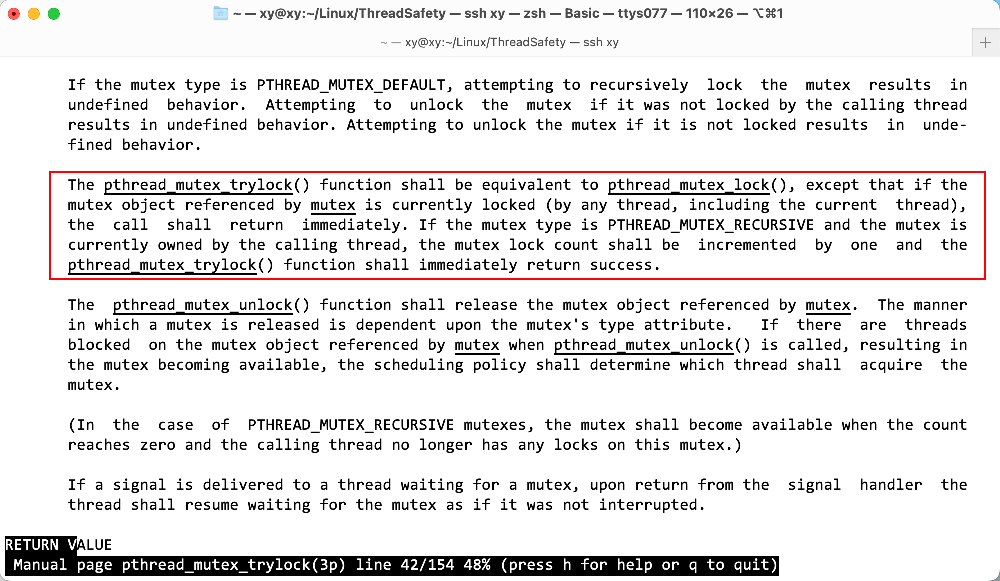这段话描述了
pthread_mutex_trylock函数的行为。它与pthread_mutex_lock函数类似，但有一个重要的区别：如果互斥锁当前被任何线程（包括当前线程）锁定，则该函数将立即返回，而不会阻塞。此外，如果互斥锁的类型为
PTHREAD_MUTEX_RECURSIVE并且当前由调用线程拥有，则互斥锁的锁定计数将增加 1，并且pthread_mutex_trylock函数将立即返回成功。简而言之，
pthread_mutex_trylock函数用于尝试锁定互斥锁，如果互斥锁当前被锁定，则该函数将立即返回，而不会阻塞。如果互斥锁的类型为PTHREAD_MUTEX_RECURSIVE并且当前由调用线程拥有，则该函数将增加互斥锁的锁定计数并立即返回成功。
7. 线程同步
7.1 前导概念
同步
在第 2 点中提到，同步就是多个事件按照一定的顺序执行。那么对于线程而言，线程同步指的是协调多个线程按照某种特定的顺序执行，以确保它们能够正确地访问共享资源。这通常需要使用一些同步机制，如互斥锁、信号量和条件变量等，来控制线程之间的执行顺序。
竞态条件
竞态条件是指在多线程程序中，多个线程同时访问和修改共享资源，导致程序的执行结果依赖于线程的调度顺序。这可能会导致程序出现不确定的行为，甚至产生错误的结果。
为了避免竞态条件，需要使用同步机制来协调多个线程之间的执行顺序。例如，在访问共享资源之前，可以使用互斥锁来保护对共享资源的访问。这样，在任意时刻，都只有一个线程能够访问共享资源，从而避免了竞态条件。
7.2 引入
就抢票的例子而言，机制一个线程在加锁和解锁之间把 10000 张票一次性抢完了，这是有可能发生的，可能这个线程的优先级比较高，这种情况是允许存在的，是没错的，但是它是不合理的。为啥说它没错但不合理呢？
例如小明到手机专卖店看手机，如果他第一次去店员说这款手机下个月才上市，第二天小明又去问，第三天。.. 这样做没错，但是每次去问店员都要抽出时间应付小明，显然这是无意义的。而且生活中不会有这么大病的操作，为什么说这个做法没错呢？因为这是符合同步机制的（请看上面的概念），因为共享资源和锁正在被占用，因此它只能不断地询问。通过这个例子能帮助我们理解线程同步机制的意义。
那么对于线程，如果它每次要申请锁访问临界资源，操作系统都跟它说：“别的线程正在里面忙呢，一边呆着去（去等待队列里）。”但是这个线程有点大病，无时无刻地都在申请锁，这样对线程而言是无意义的操作。这就是单纯加锁时线程调度不合理的地方：
- 如果个别线程的优先级很高，每次都能申请到锁，但申请锁之后什么也不做，一直在无意义地申请锁和释放锁，这就可能导致其他线程长时间竞争不到锁，引起饥饿问题。
加锁能够保证在同一时间只有一个线程执行临界区代码访问临界资源，但它不能保证让每一个线程都能访问临界资源。所以我们需要一个同步机制，使得加锁能更有意义，从而实现高效的线程同步。
因为申请锁的目的是访问临界资源，没有锁就不能访问，所以在描述中「申请锁」和「申请访问临界资源」是等价的，从代码角度看，它们是有先后关系的。
7.3 线程同步
线程同步通常涉及使用一些同步机制，例如我们抢票例子中的互斥锁，除此之外还有信号量和条件变量等，来控制多个线程之间的执行顺序，线程的行为取决于所使用的同步机制。以互斥锁为例：
-
线程申请锁失败：当一个线程调用 pthread_mutex_lock 函数申请锁失败时，它将被阻塞，直到其他线程释放锁为止。如果使用 pthread_mutex_trylock 函数，则当申请锁失败时，该函数将立即返回错误代码。
-
线程释放锁：它会唤醒等待该锁的其他线程。例如一个线程调用 pthread_mutex_unlock 函数释放锁时，等待该锁的其他线程将被唤醒，并继续竞争获取锁。
互斥锁的操作和原理已经介绍过，下面将介绍条件变量。
7.4 条件变量
在申请锁对临界资源访问时，前提是临界资源是存在的，所以要首先检测临界资源是否存在。检测操作本身就是访问临界资源，因此，要检测临界资源也要在加锁和解锁之间（临界区）进行，以保证临界资源的安全。常规方式是检测资源是否就绪，如果资源不就绪，那么申请锁就会失败，如果对线程的行为不加以限制，那么它会一直频繁地申请和释放锁，执行无意义的操作，所以要给这个条件设置一个标志，以表征条件是否就绪，就能限制线程的行为。这个标志叫做条件变量。
如何限制线程的行为？跟手机店的例子联系起来：
- 不要让线程自己频繁地检测临界资源是否就绪，让它等着；
- 当条件已经就绪，通知这个正在等待的线程，让它申请锁和访问临界资源。
条件变量是利用线程间共享的全局变量进行同步的一种机制，条件变量是用来描述某种资源是否就绪的一种数据化描述。条件变量允许一个或多个线程等待某个共享状态的变化，同时释放已经获取的互斥锁，从而让其他线程有机会修改该状态。当共享状态发生变化时，一个或多个等待的线程可以被唤醒，重新获取互斥锁，并继续执行。
条件变量的主要操作有两个：
- 等待操作：表示一个线程等待条件变量的“条件”成立而挂起，它需要提供一个互斥锁和一个条件变量作为参数。
- 等待操作： 表示另一个线程使“条件”成立后唤醒正在等待“条件”的线程。
- 释放互斥锁，从而允许其他线程访问共享资源。
- 阻塞当前线程，将其加入到条件变量的等待队列中。
- 当收到信号时，唤醒当前线程，并重新获取互斥锁。
- 检查条件是否真正成立，如果不成立，则重复上述步骤。
唤醒操作表示一个线程通知其他线程某个条件已经成立，它需要提供一个条件变量作为参数。唤醒操作可以分为两种：单发和广播。单发信号只唤醒一个等待的线程，而广播信号唤醒所有等待的线程。唤醒操作不需要持有互斥锁，但通常在修改共享状态后执行。
唤醒操作也叫信号 (signal) 操作。
原则
条件变量的使用需要遵循以下原则：
- 条件变量必须和互斥锁配合使用，以保护共享状态的一致性。
- 等待操作必须在持有互斥锁的情况下执行，以避免竞态条件。
- 信号操作可以在任何时候执行，但最好在持有互斥锁的情况下执行，以避免误唤醒或漏唤醒。
- 等待操作必须使用 while 循环来检查条件，以应对虚假唤醒或多次唤醒。
- 条件变量必须用 pthread_cond_init 函数初始化，并用 pthread_cond_destroy 函数销毁。
条件变量是一种强大而灵活的同步工具，可以用于实现各种复杂的场景，例如生产者-消费者模型、读者-写者模型、线程池等。使用条件变量时，需要注意正确地设置和检查条件，以及合理地分配信号和等待的责任。
cond 族函数
pthread_cond 族函数是 Linux 下的一组用于线程同步的函数。它们包括：
- pthread_cond_init：初始化条件变量。
- pthread_cond_wait：阻塞等待条件变量满足。
- pthread_cond_signal：唤醒一个等待条件变量的线程。
- pthread_cond_broadcast：唤醒所有等待条件变量的线程。
- pthread_cond_timedwait：阻塞等待条件变量满足，直到指定时间。
- pthread_cond_destroy：销毁条件变量。
这些函数的返回值都是一样的：当函数执行成功时，它们都返回 0。任何其他返回值都表示错误。
pthread_cond_init
原型：
int pthread_cond_init(pthread_cond_t *restrict cond, const pthread_condattr_t *restrict attr);参数：
- cond：需要初始化的条件变量。
- attr：初始化条件变量的属性，一般设置为 NULL/nullptr 表示默认属性。
和定义互斥锁类似，调用 pthread_cond_init 函数初始化条件变量叫做动态分配，除此之外，还可以静态分配（一般在全局使用）：
cpthread_cond_t cond = PTHREAD_COND_INITIALIZER; // 它是一个宏
注意：静态分配的条件变量不需要手动调用函数销毁。
pthread_cond_destroy
原型：
int pthread_cond_destroy(pthread_cond_t *cond);参数：
- cond: 需要销毁的条件变量。
pthread_cond_wait
原型：
int pthread_cond_wait(pthread_cond_t *restrict cond, pthread_mutex_t *restrict mutex);参数：
- cond: 需要等待的条件变量。
- mutex: 当前线程所处临界区对应的互斥锁。
pthread_cond_broadcast 和 pthread_cond_signal
原型：
int pthread_cond_broadcast(pthread_cond_t cond);
int pthread_cond_signal(pthread_cond_t cond);参数：
- cond：唤醒在 cond 条件变量下等待的线程。
区别：
- pthread_cond_signal 函数用于唤醒等待队列中首个线程。
- pthread_cond_broadcast 函数用于唤醒等待队列中的全部线程。
示例
框架
下面的例子将有多个线程执行不同的任务，当它们正在执行任务时，其他线程正在等待。使用了一个函数指针数组保存不同线程函数，同样地，传递给线程的信息可以保存在一个对象中。在加锁之前，首先写好框架，示例创建了三个线程，每个线程执行一个不同的任务，并使用一个函数指针类型作为参数传递给线程函数：
#include <iostream>
#include <string>
#include <unistd.h>
#include <pthread.h>
using namespace std;
#define THREAD_NUM 3 // 线程数量
typedef void (*func_t)(const string& name); // 定义一个函数指针类型
class ThreadData
{
public:
// 构造函数
ThreadData(const string& tname, func_t func)
: _tname(tname)
, _func(func)
{}
public:
string _tname; // 线程名
func_t _func; // 线程函数指针
};
// 线程函数 1
void tFunc1(const string& tname)
{
while(1)
{
cout << tname << "正在运行任务 A..." << endl;
sleep(1);
}
}
// 线程函数 2
void tFunc2(const string& tname)
{
while(1)
{
cout << tname << "正在运行任务 B..." << endl;
sleep(1);
}
}
// 线程函数 3
void tFunc3(const string& tname)
{
while(1)
{
cout << tname << "正在运行任务 C..." << endl;
sleep(1);
}
}
// 跳转函数
void* Entry(void* args)
{
ThreadData* td = (ThreadData*)args; // 强转获取参数传递的数据
td->_func(td->_tname); // 调用线程函数
delete td; // 销毁数据
return nullptr;
}
int main()
{
pthread_t t[THREAD_NUM]; // 创建线程 ID
func_t f[THREAD_NUM] = {tFunc1, tFunc2, tFunc3}; //保存线程函数地址
for(int i = 0; i < THREAD_NUM; i++)
{
string tname = "thread["; // 线程名
tname += to_string(i + 1); tname += "]";
ThreadData* td = new ThreadData(tname, f[i]); // 创建保存数据的对象
pthread_create(t + i, nullptr, Entry, (void*)td); // 创建线程的同时将名字和数据对象传递
}
for(int i = 0; i < THREAD_NUM; i++) // 等待线程
{
pthread_join(t[i], nullptr);
cout << "thread[" << t[i] << "] 已退出。.." << endl;
}
return 0;
}步骤：
-
定义了一个函数指针类型 func_t，它接受一个 const string&类型的参数，并返回 void。这样，我们可以将不同的函数作为参数传递给线程函数。
-
定义了一个类 ThreadData，它用来封装线程的数据，包括线程名和线程函数指针。它有一个构造函数，用来初始化这两个成员变量。
-
定义了三个线程函数 tFunc1、tFunc2 和 tFunc3，它们分别执行任务 A、B 和 C，并打印出线程名和任务信息。这里我们使用了 sleep(1) 函数，让每个线程暂停一秒钟，以便观察输出结果。
-
接着，我们定义了一个跳转函数 Entry，它是 pthread_create 函数的第三个参数，用来启动线程。它获取传递的数据。调用对象中的线程函数，并传入线程名作为参数。最后，它 delete 掉 td 对象（因为它在 main 函数中是 new 出来的）。
函数地址+
()操作符，相当于调用这个地址的函数。 -
在 main 函数中，用数组保存线程 ID 和线程函数的地址。在循环中依次创建三个线程，调用 pthread_create 函数，将线程信息传递给它。这样，就将名字和数据对象传递给了跳转函数 Entry。如果创建线程失败，则打印错误信息并退出程序。最后在循环中等待三个线程。
需要注意的是，在使用 pthread_create 函数时，需要将参数强制转换为 void *类型，并在跳转函数中再转换回原来的类型。这在之前有强调过。
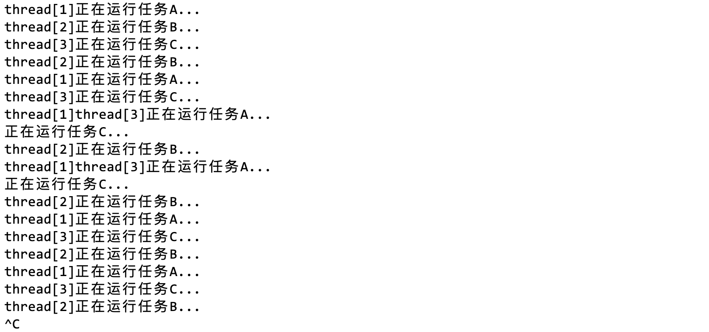然而，这个程序并不完善，因为没有指定线程函数要执行的任务，只能手动终止，这只是一个框架。
互斥锁、条件变量
在释放互斥锁和条件变量时，释放的顺序应该与申请的顺序相反。也就是说，如果你先申请了互斥锁，然后再申请条件变量，那么在释放时，应该先释放条件变量，然后再释放互斥锁。也就是说，先申请的资源应该后释放。
这样做是为了避免死锁。死锁是指两个或多个线程在等待对方释放资源，而导致它们都无法继续执行的情况。如果所有线程都按照相同的顺序申请和释放资源，那么就可以避免死锁的发生。例如：
int main()
{
pthread_mutex_t mtx;
pthread_cond_t cond;
pthread_mutex_init(&mtx, nullptr);
pthread_cond_init(&cond, nullptr);
// ...
pthread_mutex_destroy(&mtx);
pthread_cond_destroy(&cond);
return 0;
}注：条件变量通常与互斥锁一起使用，以确保线程安全。
扩充信息
框架中的 ThreadData 类已经不满足需求了，因为我们定义了条件变量和互斥锁，要让每个线程被条件变量和互斥锁约束，就要让它们看到这两个东西。所以需要扩充要传递给线程的信息内容。
typedef void (*func_t)(const string& name, // 定义一个函数指针类型
pthread_mutex_t* pmtx,
pthread_cond_t* pcond);
class ThreadData
{
public:
// 构造函数
ThreadData(const string& tname, func_t func, pthread_mutex_t* pmtx, pthread_cond_t* pcond)
: _tname(tname)
, _func(func)
, _pmtx(pmtx)
, _pcond(pcond)
{}
public:
string _tname; // 线程名
func_t _func; // 线程函数指针
pthread_mutex_t* _pmtx; // 互斥锁指针
pthread_cond_t* _pcond; // 条件变量指针
};Entry 作为 main 函数和线程函数之间的软件层，需要多传几个参数；线程函数也需要使用互斥锁地址和条件变量的地址。
// 跳转函数
void* Entry(void* args)
{
// ...
td->_func(td->_tname, td->_pmtx, td->_pcond); // 调用线程函数
// ...
}这样每个线程就能拿到同一个内存中的锁，并且可以调用不同的线程函数。这里可以设置成全局锁，就不用费劲地传参数了，但是全局变量本身如果控制不好的话也有安全问题。
以其中一个线程函数为例：
void tFunc1(const string& tname, pthread_mutex_t* pmtx, pthread_cond_t* pcond)
{
while(1)
{
pthread_mutex_lock(pmtx); // 加锁
pthread_cond_wait(pcond, pmtx); // 等待条件（失败就进入等待队列）
cout << tname << "正在运行任务 A..." << endl;
pthread_mutex_unlock(pmtx); // 解锁
sleep(1);
}
}
int main()
{
// ...
ThreadData* td = new ThreadData(tname, f[i], &mtx, &cond); // 创建保存数据的对象
// ...
return 0;
}调用 pthread_cond_wait 函数的线程会被立即阻塞，就像进程一样从 R->S。被阻塞的线程将会在一开始就放在等待队列中。在同一个条件变量下，上面的代码不加限制地直接让每个线程从一开始就被阻塞，虽然调度器调度策略是不确定的，但是当所有线程都在等待队列里时，它们的执行顺序就已经被确定了（我们知道，队列是 FIFO 的）。这个执行顺序就是队列中的顺序（例如 abcd)，只要任务还未完成，后续线程被调度的顺序必定是固定的，因为调度器只会取队列头部的线程执行任务，这个顺序是由队列这种数据结构决定的，而不受调度器调度策略影响。
唤醒线程
条件变量唤醒
在 main 函数的创建和等待逻辑的中间，可以增加控制线程的逻辑。例如使用 pthread_cond_signal 函数唤醒正在等待的线程，它的参数是条件变量地址，条件变量的作用是用来指定要发送信号的条件变量。
如果没有线程处在阻塞等待状态，pthread_cond_signal 也会成功返回 1。
pthread_cond_signal 叫做“条件变量信号”，信号的作用是唤醒，所以我习惯将 signal 称之为唤醒。
int main()
{
// 创建线程
sleep(5);
while(1)
{
cout << "唤醒线程。.." << endl;
pthread_cond_signal(&cond); // 唤醒线程
sleep(1);
}
// 等待线程
return 0;
}sleep(5) 的作用是确保在创建线程以后，线程有足够的时间执行到 pthread_cond_signal 函数，保证所有线程都处于等待状态。
sleep(1) 的所用是有节奏地唤醒线程，以更好地观察现象。
输出：
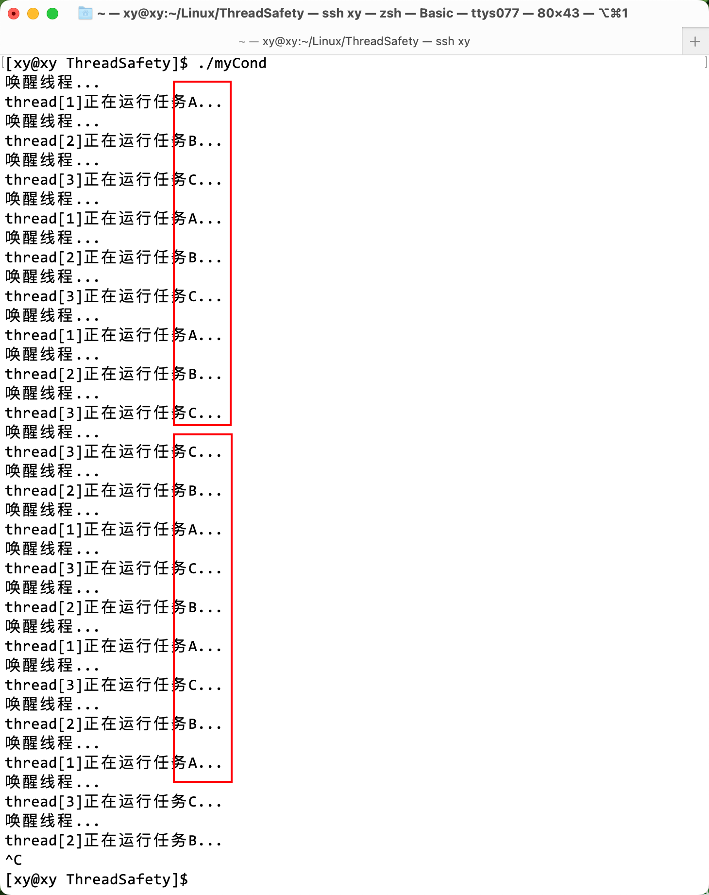输出的结果和上一次没有加锁比起来整齐了许多，打印内容也不会混在一起。而且，线程被调度是有一定顺序的。
为什么前三轮是 ABC，后面是 CBA？
虽然一开始每个线程都在等待条件变量 cond 被触发。在 main 函数中，使用了 pthread_cond_signal 来唤醒一个等待 cond 的线程。这个函数会按照 FIFO 顺序唤醒等待队列中的第一个线程。然而，被唤醒的线程并不一定是第一个执行的。上面的代码中使用了 sleep(1) 来控制唤醒线程的时间间隔。然而，这并不能保证每次唤醒的线程都能获得 mtx 锁并执行。如果在这个时候有另一个线程已经持有了 mtx 锁，那么被唤醒的线程仍然需要等待。因此，即使按照顺序唤醒了等待队列中的线程，它们执行的顺序仍然是不确定的。
如何保证被唤醒的一定是等待队列头部的线程？
想要保证打印出来的顺序始终是 ABCABCABC，那么可以使用一个计数器来控制线程的执行顺序。例如，可以定义一个全局变量 int turn，并初始化为 0。然后，在每个线程函数中，你可以检查 turn 的值来确定当前是否应该执行。
例如，在 tFunc1 中，可以在 while 循环中添加一个 while 语句，只有当 turn 0 时才退出循环并执行打印操作。类似地，在 tFunc2 和 tFunc3 中，添加类似的 while 语句，分别检查 turn 1 和 turn == 2。
在每个线程函数执行完打印操作后，需要使用互斥锁来保护对 turn 的访问，并将其递增 1。然后，需要使用 pthread_cond_broadcast 来唤醒所有等待条件变量的线程。这样，每个线程都会按照预定的顺序执行。
下面是一个修改后的 tFunc1 函数的示例：
void tFunc1(const string& tname, pthread_mutex_t* pmtx, pthread_cond_t* pcond)
{
while(1)
{
pthread_mutex_lock(pmtx);
while(turn != 0)
{
pthread_cond_wait(pcond, pmtx);
}
cout << tname << "正在运行任务 A..." << endl;
turn = (turn + 1) % 3;
pthread_cond_broadcast(pcond);
pthread_mutex_unlock(pmtx);
sleep(1);
}
}在这个示例中，每个线程都会在执行打印操作之前检查 turn 的值。如果 turn 的值不等于预定值，那么线程将会等待条件变量。当一个线程执行完打印操作后，它会更新 turn 的值并唤醒所有等待条件变量的线程。这样，其他线程就能够继续执行。
这里是一个控制线程调度的一个方法，除此之外，想要按照固定的顺序调度线程，也可以使用一个信号量来控制线程的执行顺序。信号量是一种用于同步多个线程或进程的工具，它可以用来保证多个线程按照预定的顺序执行。
信号量将在下一节学习。
例如，可以定义一个全局变量 sem_t sem，并在 main 函数中使用 sem_init(&sem, 0, 1) 来初始化它。然后在每个线程函数中使用 sem_wait(&sem) 来等待信号量，只有当信号量的值大于 0 时才能继续执行。在执行完打印操作后需要使用 sem_post(&sem) 来释放信号量，以便其他线程能够继续执行。
下面是一个修改后的 tFunc1 函数的示例：
void tFunc1(const string& tname)
{
while(1)
{
sem_wait(&sem);
cout << tname << "正在运行任务 A..." << endl;
sem_post(&sem);
sleep(1);
}
}在这个示例中，每个线程都会在执行打印操作之前等待信号量。由于信号量的初始值为 1，因此只有一个线程能够获得信号量并继续执行。其他线程将会被阻塞，直到当前线程执行完打印操作并释放信号量后才能继续执行。
这样就可以保证每次唤醒的都是等待队列头部的线程，并且它们会按照预定的顺序执行。
条件变量广播
下面是一个使用条件变量广播的修改后的代码示例，在全局设置一个 bool 标记位 quit，默认是 false。当唤醒线程的逻辑结束后，再将 bool 置位 true，表示线程已经执行完任务退出了。
那么在线程函数中的 while 条件应该改成while(!quit)，表示线程还未结束时才会执行它的逻辑。
// 为了阅读体验，省略了未修改的部分
// 并省略了 tFunc2 和 tFunc3，它们是类似的。
volatile bool quit = false;
// 线程函数 1
void tFunc1(const string& tname, pthread_mutex_t* pmtx, pthread_cond_t* pcond)
{
while(!quit)
{
pthread_mutex_lock(pmtx); // 加锁
pthread_cond_wait(pcond, pmtx); // 等待条件（失败就进入等待队列）
cout << tname << "正在运行任务 A..." << endl;
pthread_mutex_unlock(pmtx); // 解锁
sleep(1);
}
}
// ...
int main()
{
// ...
for(int i = 0; i < THREAD_NUM; i++)
{
string tname = "thread[";
tname += to_string(i + 1); tname += "]";
ThreadData* td = new ThreadData(tname, f[i], &mtx, &cond);
pthread_create(t + i, nullptr, Entry, (void*)td);
}
sleep(5);
cout << "----线程控制逻辑开始----" << endl;
int count = 5;
while(count)
{
cout << "唤醒线程。.." << count-- << endl;
pthread_cond_broadcast(&cond);
sleep(1);
}
cout << "----线程控制逻辑结束----" << endl;
quit = true;
for(int i = 0; i < THREAD_NUM; i++)
{
pthread_join(t[i], nullptr);
cout << "thread[" << t[i] << "] 已退出。.." << endl;
}
// ...
return 0;
}在这个示例中，在每个线程函数中，在调用 pthread_cond_wait 之前，都会将 ready 递增 1。在 main 函数中，使用了一个 while 循环来等待所有的线程都进入等待队列。当 ready 的值等于线程数量时，就会调用 pthread_cond_broadcast 来一次性唤醒所有的线程。
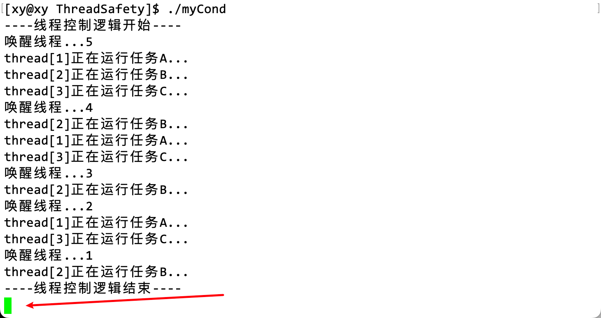但是执行了一会就卡住了，而且每轮线程被调度的顺序也是不一样的。如果多运行几次，甚至还会有不一样的结果 [取决于调度器]：
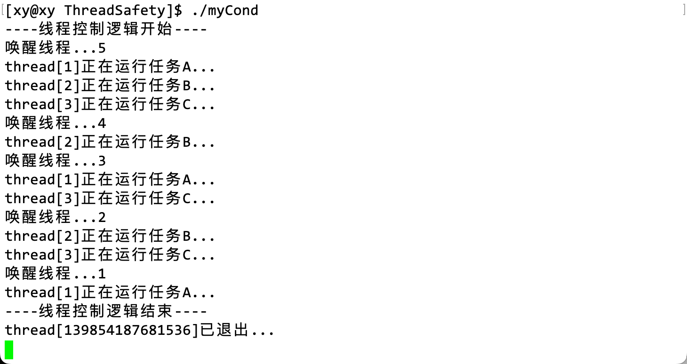如果把线程函数中的 sleep 删掉：
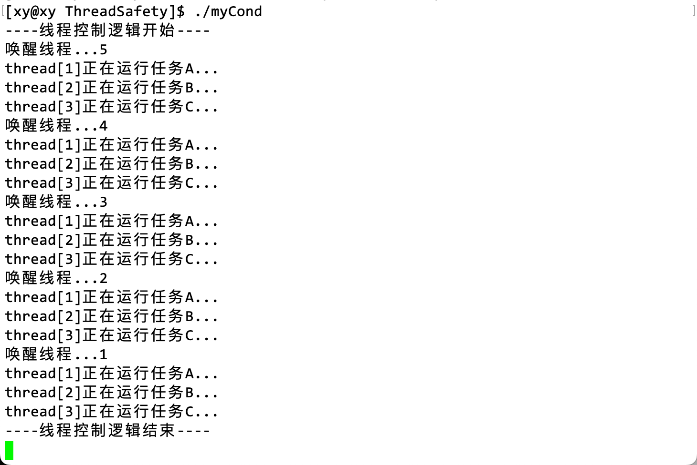看起来有序了。如果把 pthread_cond_broadcast 换成 pthread_cond_signal：
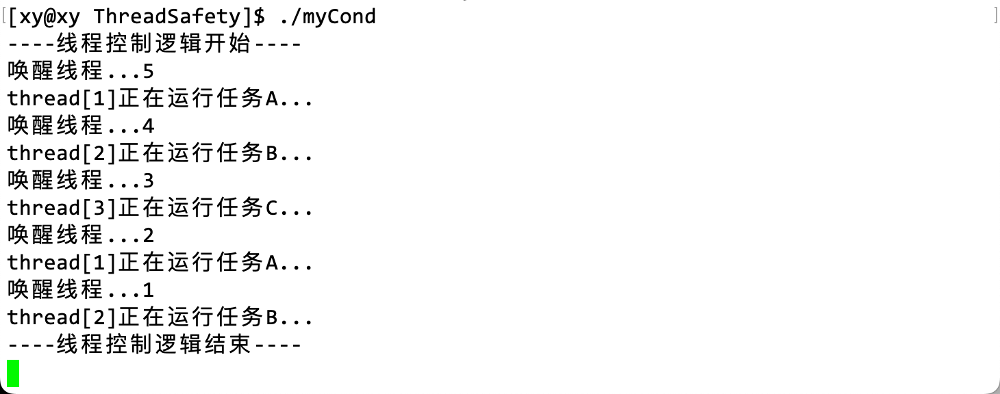- 换成 pthread_cond_signal 后，每次只会打印一条语句，这验证了 pthread_cond_broadcast 会同时唤醒等待队列中的所有线程。
- 当调用 pthread_cond_broadcast 时，所有等待条件变量的线程都会被唤醒。然而，它们并不一定会按照预定顺序执行。这是因为，当一个线程被唤醒时，它仍然需要获得互斥锁才能继续执行。如果在这个时候有另一个线程已经持有了互斥锁，那么被唤醒的线程仍然需要等待。
如果想要保证线程按照预定顺序执行，那么可以使用前面提到的方法来控制线程的执行顺序。这段代码最大的问题就是不管使用何种方式唤醒线程执行任务，即使它们执行完毕并退出后，程序也无法退出。造成这个问题的原因是线程函数是不完善的。
对于这段代码：
while(!quit)
{
pthread_mutex_lock(pmtx); // 加锁
pthread_cond_wait(pcond, pmtx); // 等待条件（失败就进入等待队列）
cout << tname << "正在运行任务 A..." << endl;
pthread_mutex_unlock(pmtx); // 解锁
sleep(1);
}在调用 pthread_cond_wait 之前，必须首先要检测临界资源是否就绪，这个检测的动作本身就是在访问临界资环。如果临界资源不就绪，那么才会调用 pthread_cond_wait 函数让线程进入阻塞状态，进入等待队列等待唤醒。换句话说，pthread_cond_wait 必须要在加锁和解锁之间进行，因为我们规定临界区尽可能短，且完整地包含所有访问临界资源的代码，因此 pthread_cond_wait 函数被调用时，线程此时一定在临界资源中，因为检测这个操作本身就在临界资源中。
在申请临界资源之前，线程是不知道临界资源时何种状态的，只有它进入了临界资源检测了才知道。如果检测到资源未就绪，那么线程会等待，它不会无意义地一直申请锁和释放锁，因为这样会降低效率。
因此，我们可以根据具体需求，在调用 pthread_cond_wait 函数之前判断临界资源是否就绪，但是此处很难找到一个描述形容临界资源就绪是何种情况，所以我用一个全局变量 ready 模拟检测临界资源是否就绪。当 ready 变量为 false 时，线程函数会在检查到这个条件后调用 pthread_cond_wait 函数进入等待队列。当主线程中的 while 循环迭代到 count == 1 时，它会将 ready 变量设置为 true，表示临界资源已经就绪。这样一来，线程函数在检查到这个条件后就不会再进入等待队列，而是继续执行它们的任务。
这样，在主线程中将 ready 变量设置为 true 的操作，对于线程函数来说，就相当于通知它们临界资源已经就绪，无需再进入等待队列。
void tFunc1(const string& tname, pthread_mutex_t* pmtx, pthread_cond_t* pcond)
{
while(!quit)
{
pthread_mutex_lock(pmtx); // 加锁
while(!ready) // 等待条件（失败就进入等待队列）
pthread_cond_wait(pcond, pmtx);
cout << tname << "正在运行任务 A..." << endl;
pthread_mutex_unlock(pmtx); // 解锁
}
sleep(1);
}值得注意的是，在线程函数中使用 pthread_cond_wait 时，应该使用 while 循环来检查条件。这是因为当线程被唤醒并重新获得互斥锁时，条件可能已经不再满足。使用 while 循环可以确保在继续执行之前条件仍然满足。如果使用 if 语句，那么当线程被唤醒时，它将不再检查条件，可能会导致错误。
在 main 函数中，计数器 count 的起始值是 3，当 count==1 时，便让 ready 的值为 false，同时利用 count 在循环中使用 pthread_cond_wait 函数一次性唤醒所有线程，查看现象：

代码
#include <iostream>
#include <string>
#include <pthread.h>
#include <unistd.h>
using namespace std;
#define THREAD_NUM 3 // 线程数量
typedef void (*func_t)(const string& name, // 定义一个函数指针类型
pthread_mutex_t* pmtx,
pthread_cond_t* pcond);
volatile bool quit = false;
volatile bool ready = false;
class ThreadData
{
public:
// 构造函数
ThreadData(const string& tname, func_t func, pthread_mutex_t* pmtx, pthread_cond_t* pcond)
: _tname(tname)
, _func(func)
, _pmtx(pmtx)
, _pcond(pcond)
{}
public:
string _tname; // 线程名
func_t _func; // 线程函数指针
pthread_mutex_t* _pmtx; // 互斥锁指针
pthread_cond_t* _pcond; // 条件变量指针
};
// 线程函数 1
void tFunc1(const string& tname, pthread_mutex_t* pmtx, pthread_cond_t* pcond)
{
while(!quit)
{
pthread_mutex_lock(pmtx); // 加锁
while(!ready) // 等待条件（失败就进入等待队列）
pthread_cond_wait(pcond, pmtx);
cout << tname << "正在运行任务 A..." << endl;
pthread_mutex_unlock(pmtx); // 解锁
}
sleep(1);
}
// 线程函数 2
void tFunc2(const string& tname, pthread_mutex_t* pmtx, pthread_cond_t* pcond)
{
while(!quit)
{
pthread_mutex_lock(pmtx);
while(!ready) pthread_cond_wait(pcond, pmtx);
cout << tname << "正在运行任务 B..." << endl;
pthread_mutex_unlock(pmtx);
}
sleep(1);
}
// 线程函数 3
void tFunc3(const string& tname, pthread_mutex_t* pmtx, pthread_cond_t* pcond)
{
while(!quit)
{
pthread_mutex_lock(pmtx);
while(!ready) pthread_cond_wait(pcond, pmtx);
cout << tname << "正在运行任务 C..." << endl;
pthread_mutex_unlock(pmtx);
}
sleep(1);
}
void* Entry(void* args)
{
ThreadData* td = (ThreadData*)args;
td->_func(td->_tname, td->_pmtx, td->_pcond);
delete td;
return nullptr;
}
int main()
{
pthread_mutex_t mtx;
pthread_cond_t cond;
pthread_mutex_init(&mtx, nullptr);
pthread_cond_init(&cond, nullptr);
pthread_t t[THREAD_NUM];
func_t f[THREAD_NUM] = {tFunc1, tFunc2, tFunc3};
for(int i = 0; i < THREAD_NUM; i++)
{
string tname = "thread[";
tname += to_string(i + 1); tname += "]";
ThreadData* td = new ThreadData(tname, f[i], &mtx, &cond);
pthread_create(t + i, nullptr, Entry, (void*)td);
}
sleep(3);
cout << "----线程控制逻辑开始----" << endl;
int count = 3;
while(count)
{
if(count == 1) ready = true;
cout << "唤醒线程。.." << count-- << endl;
pthread_cond_broadcast(&cond);
sleep(1);
}
cout << "----线程控制逻辑结束----" << endl;
// pthread_cond_broadcast(&cond);
quit = true;
for(int i = 0; i < THREAD_NUM; i++)
{
pthread_join(t[i], nullptr);
cout << "thread[" << t[i] << "] 已退出。.." << endl;
sleep(1);
}
pthread_mutex_destroy(&mtx);
pthread_cond_destroy(&cond);
return 0;
}勘误（懒得重录）：GIF 中的代码中，在循环外部也调用了 pthread_cond_broadcast，这不影响结果，我在循环内部调用 pthread_cond_broadcast 的目的是观察资源检测成功后，不调用 pthread_cond_wait 的线程的行为。
当然 pthread_cond_broadcast 也可以换成 pthread_cond_signal 实验，结果也是类似的。
补充
使用全局变量 ready 模拟检测临界资源是否就绪这个操作时合理的。
在多线程编程中，全局变量通常用于在线程之间共享数据和状态。例如在上面的程序中，ready 变量用于在线程之间共享临界资源的状态，也就是说，ready 变量本身就是一个临界资源，而检测临界资源这个操作本身也在临界区中，因此这是自洽的。当 ready 变量为 false 时，线程函数会进入等待队列，等待临界资源就绪。当主线程将 ready 变量设置为 true 时，线程函数会检测到这个状态改变，并继续执行它们的任务。
上面的示例中，如果把 main 函数 while 中的 sleep 注释掉，那么不管是 signal 还是 broadcast，最后的结果都是这样的：
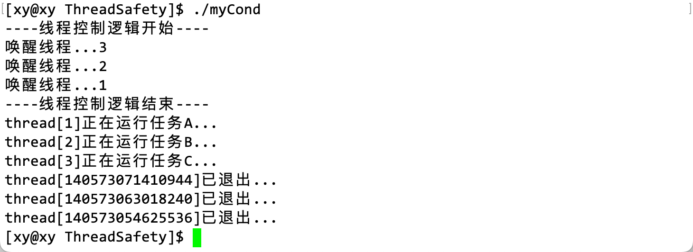
当去掉 sleep 函数后，主线程在 while 循环中快速地唤醒了所有等待条件变量的线程。但是，由于主线程没有等待，所以它很快就进入了下一次迭代，并在循环结束后将全局变量 quit 设置为 true。这样一来，所有的线程都会在检查到 quit 变量为 true 后退出它们的循环，并结束运行。
因此去掉 sleep 函数后，主线程运行得太快了，以至于其他线程只有一次机会执行它们的任务。这就是为什么只执行了一次线程任务，然后就退出了。
为什么 pthread_cond_wait 要和互斥锁搭配使用？
确保线程安全。条件变量需要配合互斥锁使用，其中条件变量是用来完成同步的，而互斥锁是用来完成互斥的。
- 条件等待是线程间同步的一种手段，如果只有一个线程，并且条件不满足的情况下，一直等下去都不会满足，所以必须要有一个线程通过某些操作，改变共享变量，使原先不满足的条件变得满足，并且友好地通知等待在条件变量上的线程。
- 条件不会无缘无故的突然变得满足了，必然会是临界资源的变化引起的，所以一定要用互斥锁来保护，没有互斥锁就无法安全地获取和修改共享数据。当线程进入临界区时需要先加锁，然后判断内部资源的情况，若不满足当前线程的执行条件，则需要在该条件变量下进行等待，但此时该线程是持有锁被挂起的，也就意味着这个锁再也不会被释放了，此时就会发生死锁问题。
- 所以在调用 pthread_cond_wait 函数时，还需要将对应的互斥锁传入，此时当线程因为某些条件不满足需要在该条件变量下进行等待时，就会自动释放该互斥锁。
- 当该线程被唤醒时，该线程会接着执行临界区内的代码，此时便要求该线程必须立马获得对应的互斥锁，因此当某一个线程被唤醒时，实际会自动获得对应的互斥锁。
当一个线程调用 pthread_cond_wait 函数时，它会执行以下操作：
- 释放传入的互斥锁。
- 将线程阻塞在条件变量上，等待被唤醒。
- 当线程被唤醒时，它会重新获取互斥锁。
这样做的目的是防止竞争条件。如果多个线程在等待同一个条件变量，那么当条件变量被唤醒时，这些线程都会试图获取互斥锁。由于只有一个线程能够获取到互斥锁，所以其他线程会继续等待。这样一来，就可以确保每次只有一个线程能够访问临界区域。
条件变量有什么使用规范吗？
条件变量既然要搭配互斥锁使用，那么使用它也要有一定的规则约束。条件变量是一种同步原语，它用于在线程之间传递信号。使用条件变量通常需要遵循以下规范：
- 初始化条件变量：使用
pthread_cond_init函数初始化条件变量。 - 等待条件变量：在线程中，使用
pthread_cond_wait函数等待条件变量。该函数需要传入一个互斥锁和一个条件变量作为参数。在线程调用该函数时，它会释放互斥锁并阻塞在条件变量上，等待被唤醒。 - 唤醒等待条件变量的线程：当某个条件满足时，可以使用
pthread_cond_signal或pthread_cond_broadcast函数唤醒等待条件变量的一个或多个线程。 - 销毁条件变量：在程序结束时，使用
pthread_cond_destroy函数销毁条件变量。
下面是一个简单的示例，演示了如何使用条件变量：
#include <iostream>
#include <pthread.h>
pthread_mutex_t mtx;
pthread_cond_t cond;
bool ready = false;
void* thread_func(void* arg)
{
pthread_mutex_lock(&mtx);
while (!ready) // 注意
{
pthread_cond_wait(&cond, &mtx);
}
std::cout << "Thread is running" << std::endl;
pthread_mutex_unlock(&mtx);
return nullptr;
}
int main()
{
pthread_t thread;
pthread_mutex_init(&mtx, nullptr);
pthread_cond_init(&cond, nullptr);
pthread_create(&thread, nullptr, thread_func, nullptr);
// do something ...
pthread_mutex_lock(&mtx);
ready = true; // 注意
pthread_cond_signal(&cond);
pthread_mutex_unlock(&mtx);
pthread_join(thread, nullptr);
pthread_mutex_destroy(&mtx);
pthread_cond_destroy(&cond);
return 0;
}请注意上面的两个注释的位置，因为调用 wait 函数的原因是检测到临界资源未就绪，所以 while 中的条件为假才会执行它，所以在外部（main() 中）应该将条件变量设置为真时，线程才会被唤醒。